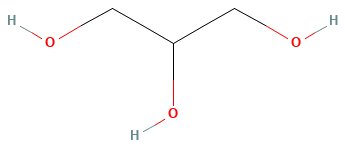
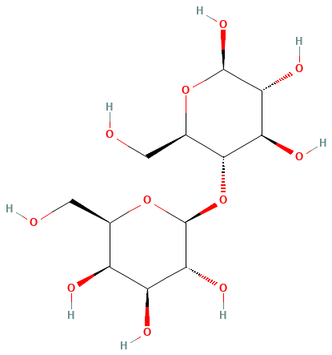
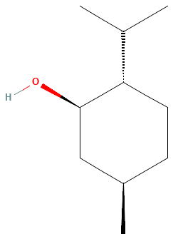
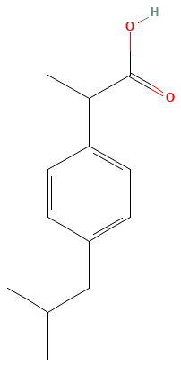
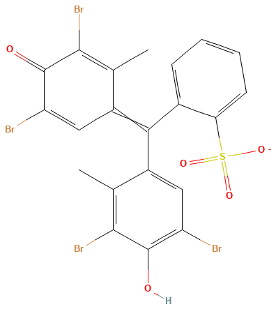
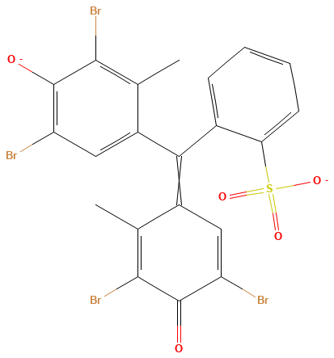
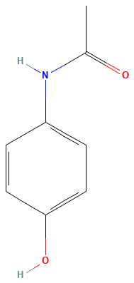
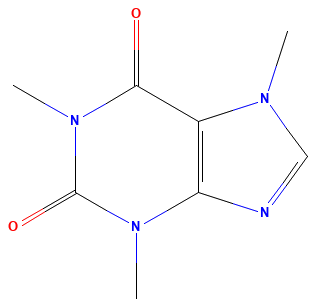

Universidad Nacional de Colombia · Sede Bogotá
Facultad de Ciencias
Departamento de Farmacia · Análisis Instrumental Farmacéutico
Programa de Farmacia · Informe-presentación
Prácticas de laboratorio
Módulo II
Análisis Instrumental Farmacéutico
Integrantes
- César Díaz Suárez
- Paula Melo
- Karen Pachon
- Diana Arguello
- Semestre
- 2026-2S
- Subgrupo
- J5
- Docente
- Nicolas Mateo Gonzalez Lopez
Índice
Cada práctica sigue la misma secuencia: Introducción → Objetivo → Fundamento → Método → Datos → Gráficos → Tratamiento estadístico → Resultados → Discusión → Conclusión.
Objetivo general y alcance
Objetivo general
Aplicar métodos instrumentales no espectroscópicos (refractometría y polarimetría) y espectroscópicos (espectrofotometría UV-Vis) a la identificación, caracterización y cuantificación de analitos de interés farmacéutico, y evaluar estadísticamente su desempeño analítico con base en criterios de validación.
| Práctica | Técnica | Analito(s) | Magnitud medida |
|---|---|---|---|
| 1 | Refractometría (Abbe) | Glicerina–agua | n, °Brix |
| 2 | Polarimetría | Lactosa, mentol | α, [α] |
| 3 | Espectrofotometría UV | Ibuprofeno | A, λmáx |
| 4 | Espectrofotometría visible | Verde de bromocresol | A frente a pH; pKa |
| 5 | Espectrofotometría UV multicomponente | Acetaminofén + cafeína | A a 256 y 273 nm |
Tratamiento experimental común (1/2): regresión y ANOVA
Modelo de calibración linealy = mx + b(1)
Describe la respuesta instrumental y como función lineal de la concentración x. La pendiente m es la sensibilidad de calibración (cambio de señal por unidad de concentración) y el intercepto b, la señal esperada del blanco. Se invierte, x = (y − b)/m, para cuantificar las muestras.
Excel=PENDIENTE(B2:B11;A2:A11)*x+INTERSECCION.EJE(B2:B11;A2:A11) o =PRONOSTICO.LINEAL(x;B2:B11;A2:A11)
En palabras simplesEs la «regla de tres» del instrumento: cada unidad de concentración sube la señal en la misma cantidad (m), y b es lo que marca el equipo sin analito. Con ella se pasa de lo que se lee a lo que hay.
Estimadores de mínimos cuadradosm = Σ(xi − x)(yi − y)Σ(xi − x)2 b = y − mx(2)
Dan la pendiente y el intercepto que minimizan la suma de cuadrados de los residuales. m es la covarianza de x e y dividida entre la varianza de x, y la recta pasa siempre por el punto medio (x, y). Suponen error solo en y y varianza constante.
Excel=PENDIENTE(B2:B11;A2:A11) · =INTERSECCION.EJE(B2:B11;A2:A11)
En palabras simplesEs la recta que pasa «por en medio» de los puntos: la que deja, en conjunto, la menor distancia (al cuadrado) entre lo medido y lo que predice.
Desviación estándar de los residualessy/x = √Σ(yi − ŷi)2n − 2(3)
Mide la dispersión de los puntos alrededor de la recta, en unidades de la respuesta. Se divide entre n − 2 porque se estimaron dos parámetros. Alimenta los intervalos de confianza, el LOD y el LOQ; si supera claramente la repetibilidad del instrumento, indica falta de ajuste.
Excel=ERROR.TIPICO.XY(B2:B11;A2:A11)
En palabras simplesDice, en promedio, cuánto se aleja un punto de la recta. Es el «ruido» típico de la calibración, en las unidades de la señal.
Intervalos de confianza de la pendiente y del interceptom ± t·sm b ± t·sb t(0,05; n − 2)(4)
Delimitan, con 95 % de confianza, los valores verdaderos de m y b, con t de Student de n − 2 grados de libertad. Si el intervalo de b incluye el cero, el intercepto no difiere del origen; un intervalo estrecho de m indica una sensibilidad bien determinada.
Excelsm: =INDICE(ESTIMACION.LINEAL(B2:B11;A2:A11;VERDADERO;VERDADERO);2;1) (sb: fila 2, columna 2) · t: =INV.T.2C(0,05;CONTAR(A2:A11)-2)
En palabras simplesEs el margen de error de la pendiente y del intercepto: el rango en el que, con 95 % de seguridad, está el valor verdadero. Si el del intercepto incluye el cero, la recta pasa por el origen.
| Fuente | gl | SC | MC | F |
|---|---|---|---|---|
| Regresión | 1 | Σ(ŷi − y)2 | SCreg/1 | MCreg/MCres |
| Residual | n − 2 | Σ(yi − ŷi)2 | SCres/(n − 2) | — |
| Total | n − 1 | Σ(yi − y)2 | — | — |
Criterio
Si F > Fcrít(1; n − 2; 0,05), la regresión es significativa. R2 por sí solo no demuestra linealidad.
Fórmulas de Excel en español (separador «;», decimales con coma): x en A2:A11, y en B2:B11 y réplicas en C2:C21. En inglés: PENDIENTE = SLOPE, INTERSECCION.EJE = INTERCEPT, ERROR.TIPICO.XY = STEYX, ESTIMACION.LINEAL = LINEST, DESVEST.M = STDEV.S, INV.T.2C = T.INV.2T.
Tratamiento experimental común (2/2): precisión, límites y residuales
Desviación estándar relativa (coeficiente de variación)%RSD = sx · 100(5)
Expresa la dispersión como porcentaje del promedio, lo que permite comparar la precisión de mediciones de distinta magnitud o unidad. Valores bajos indican alta repetibilidad; el criterio de aceptación depende del método y del nivel de concentración.
Excel=DESVEST.M(C2:C21)/PROMEDIO(C2:C21)*100
En palabras simplesCuánto «bailan» las lecturas repetidas, en porcentaje del promedio. Un 1 % significa que las lecturas se separan del promedio, en general, en una centésima parte.
Límites de detección y de cuantificación (ICH Q2)LOD = 3,3 · sy/xm LOQ = 10 · sy/xm(6)
El LOD es la menor concentración que se distingue del blanco; el LOQ, la menor que se cuantifica con precisión y exactitud aceptables. Ambos dependen del cociente entre el ruido (sy/x) y la sensibilidad (m): una pendiente mayor o una dispersión menor los reducen.
ExcelLOD: =3,3*ERROR.TIPICO.XY(B2:B11;A2:A11)/PENDIENTE(B2:B11;A2:A11) · LOQ: el mismo con 10 en lugar de 3,3
En palabras simplesEl LOD es la cantidad más pequeña que el método «alcanza a ver» por encima del ruido; el LOQ, la más pequeña que puede medir con un número confiable.
Prueba t de Student para una mediat = |x − μ| · √ns(7)
Compara un promedio experimental con un valor de referencia μ: el numerador es la diferencia observada y el denominador, el error estándar de la media. Si |t| supera tcrít (n − 1 gl; α = 0,05), la diferencia es significativa y sugiere un error sistemático.
Excel=ABS(PROMEDIO(C2:C21)-mu)*RAIZ(CONTAR(C2:C21))/DESVEST.M(C2:C21) · p: =DISTR.T.2C(t;CONTAR(C2:C21)-1)
En palabras simplesPregunta si la diferencia entre nuestro promedio y el valor de referencia es real o puede deberse al azar. Si t es grande (o p < 0,05), la diferencia es real: hay un sesgo.
- Residuales sin patrón: homocedasticidad.
- Residuales en forma de embudo: heterocedasticidad; considerar regresión ponderada.
- Prueba t de Student: |t| > tcrít indica diferencia significativa frente a μ.
Equipos e implementos de laboratorio
Instrumentos y material de las cinco prácticas. Contorno punteado: implemento habitual que la guía no menciona, por confirmar.
01
Práctica 1
Refractometría de mezclas glicerina–agua
Refractómetro de Abbe · 9 niveles de 0 a 80 % p/p (datos de la clase) · M1 y M2 (grupo 5)
- n
- % p/p
- °Brix
Objetivo general
Aplicar la refractometría de Abbe, método óptico no espectroscópico, a la cuantificación de glicerina en mezclas acuosas y valorar su utilidad en el control de calidad de materias primas y preparados farmacéuticos.
- Describir el principio óptico (ángulo crítico) y los componentes del refractómetro de Abbe, y verificarlo con el n del agua destilada frente al valor tabulado.
- Relacionar n, °Brix y °Baumé con el contenido de glicerina (% p/p) mediante curvas de calibración por mínimos cuadrados.
- Evaluar linealidad (ANOVA, residuos), homocedasticidad, %RSD, LOD y LOQ, y cuantificar M1 y M2.
- Discutir ventajas, limitaciones y aplicaciones farmacéuticas de la técnica.
Introducción
La refractometría mide cuánto se desvía la luz al pasar de un medio a otro. En una mezcla glicerina–agua el índice de refracción cambia de forma continua con la composición, así que sirve como respuesta analítica: se cuantifica sin reactivos, con una gota y sin destruir la muestra.
Reactivos y materiales
- Glicerina (propano-1,2,3-triol): patrones de 10 a 80 % p/p suministrados por el laboratorio.
- Agua destilada: blanco y verificación del cero (n = 1,3330 a 20 °C).
- Muestras problema M1 y M2 (grupos 1–5).
- Refractómetro de Abbe con escalas n y °Brix.
Qué se espera
- n y °Brix aumentan con el porcentaje de glicerina.
- Relación casi lineal, con una leve curvatura por ser una mezcla no ideal.
- n del agua cercano al valor tabulado.
- M1 y M2 dentro del intervalo calibrado, con su intervalo de confianza.
Aplicaciones en la industria farmacéutica
- Identificación y pureza de materias primas: el nD figura en las monografías de glicerina, propilenglicol, sorbitol y aceites (USP, Ph. Eur.).
- Control de jarabes y soluciones concentradas por °Brix (jarabe simple, soluciones de sacarosa).
- Control en proceso rápido y no destructivo en la fabricación de líquidos orales y semisólidos.
- Detector de índice de refracción en HPLC para azúcares, polioles y excipientes sin cromóforo.
Fundamento
Índice de refracción absoluton = cv(1.1)
Cociente entre la velocidad de la luz en el vacío (c) y en el medio (v): indica cuánto se ralentiza la luz al atravesar la sustancia. En mezclas aumenta con la proporción del componente más refringente, como la glicerina frente al agua.
Excel=3E8/v (v en m/s)
En palabras simplesDice cuántas veces más lento viaja la luz dentro de la sustancia que en el vacío. Cuanto más «densa ópticamente» la mezcla (más glicerina), más alto el número.
Ley de Snelln1 sen θ1 = n2 sen θ2(1.2)
Relaciona los ángulos de incidencia y de refracción en la interfase entre dos medios con sus índices. Al pasar a un medio de mayor índice, la luz se acerca a la normal. Es el principio físico de todos los refractómetros.
ExcelÁngulo refractado: =GRADOS(ASENO(n1*SENO(RADIANES(theta1))/n2))
En palabras simplesExplica por qué un lápiz parece quebrado dentro de un vaso de agua: al cambiar de medio, la luz se dobla, y cuánto se dobla depende de los índices de ambos medios.
Ángulo crítico (reflexión total)sen θc = nmuestranprisma(1.3)
Es el ángulo de incidencia a partir del cual la luz ya no se refracta y se refleja por completo. El refractómetro de Abbe localiza ese límite (línea de sombra) y, conocido el índice del prisma, calcula el de la muestra; por eso el prisma debe tener un índice mayor.
Excel=GRADOS(ASENO(n_muestra/n_prisma))
En palabras simplesHay un ángulo a partir del cual la luz ya no pasa a la muestra y rebota por completo. El refractómetro busca ese límite (la línea entre zona clara y oscura) y de él deduce el índice.
- El refractómetro de Abbe mide el ángulo crítico entre un prisma de índice alto y la muestra.
- n depende de la temperatura y de λ: se informa como nDT (línea D del sodio, 589 nm).
- La escala °Brix está calibrada para soluciones de sacarosa; con glicerina da un valor aparente que se usa como respuesta de calibración.
- La relación n–composición de glicerina–agua puede apartarse de la linealidad: se evalúa con la prueba de falta de ajuste.
Analitos: estructura y datos relevantes

propano-1,2,3-triol
| Propiedad | Valor |
|---|---|
| Fórmula · M | C3H8O3 · 92,09 g/mol |
| nD20 (pura) | 1,4746 (agua: 1,3330) |
| Densidad (20 °C) | 1,261 g/mL |
| Viscosidad (20 °C) | ≈ 1,4 Pa·s |
| Fusión · ebullición | 18 °C · 290 °C (descompone) |
| Solubilidad | Miscible con agua y etanol; muy higroscópica |
- Las lecturas de n van de 1,333 (agua) a 1,475 (glicerina pura).
- Al mezclarse con agua forma puentes de hidrógeno y el volumen se contrae: la mezcla no es ideal, lo que explica la curvatura de n frente a % p/p.
- Es higroscópica: los patrones concentrados absorben agua si quedan destapados y su concentración real baja.
- Su viscosidad exige homogeneizar bien y extender la gota en el prisma antes de leer.
Estructuras 2D: PubChem (CID 753). Datos: PubChem y Merck Index.
Método
- Verificar el cero del refractómetro con agua destilada, a temperatura ambiente.
- Recibir los patrones de glicerina listos (suministrados por el laboratorio): grupos 1–5, 20, 40, 60 y 80 % p/p; grupos 6–10, 10, 30, 50 y 70 % p/p.
- Leer n y °Brix de cada patrón por duplicado; limpiar los prismas entre lecturas.
- Leer las muestras problema: M1 y M2 (grupos 1–5); M3 y M4 (grupos 6–10).
- Medir a temperatura ambiente, sin termostatizar los prismas: 20 °C (agua) y 19 °C (patrones y muestras), según la hoja de datos.
| Refractómetro | Abbe (único equipo) |
|---|---|
| Temperatura | Ambiente, sin termostatizar (19–20 °C) |
| Patrones | Suministrados listos, 10–80 % p/p |
| Glicerina | Pureza ≥ 99,5 % (grado USP comercial) |
Equipos e implementos
Datos y tablas
| w (% p/p) | k | n | sn | %RSD | °Brix | s°Brix | %RSD |
|---|---|---|---|---|---|---|---|
| 0 | 20 | 1,3337 | 0,0011 | 0,086 | 0,64 | 0,98 | — |
| 10 | 10 | 1,3533 | 0,0003 | 0,021 | 13,51 | 0,06 | 0,42 |
| 20 | 10 | 1,3688 | 0,0006 | 0,047 | 22,95 | 0,33 | 1,44 |
| 30 | 10 | 1,3808 | 0,0003 | 0,023 | 29,71 | 0,18 | 0,61 |
| 40 | 10 | 1,3919 | 0,0002 | 0,017 | 35,60 | 0,28 | 0,77 |
| 50 | 10 | 1,4069 | 0,0001 | 0,007 | 43,63 | 0,11 | 0,24 |
| 60 | 10 | 1,4196 | 0,0004 | 0,027 | 49,81 | 0,18 | 0,36 |
| 70 | 10 | 1,4320 | 0,0001 | 0,006 | 55,43 | 0,21 | 0,38 |
| 80 | 10 | 1,4457 | 0,0010 | 0,070 | 61,86 | 0,09 | 0,15 |
| Muestra | w (% p/p) | n1 | n2 | °Brix1 | °Brix2 |
|---|---|---|---|---|---|
| Agua | 0 | 1,3328 | 1,3328 | 0,0 | 0,0 |
| P20 | 20 | 1,3690 | 1,3691 | 23,1 | 23,1 |
| P40 | 40 | 1,3918 | 1,3919 | 35,6 | 35,6 |
| P60 | 60 | 1,4198 | 1,4190 | 49,9 | 49,9 |
| P80 | 80 | 1,4429 | 1,4465 | 61,9 | 62,0 |
| M1 | incógnita | — | 1,3929 | — | 36,1 |
| M2 | incógnita | 1,4020 | 1,4020 | 41,3 | 41,2 |
—: lectura no registrada en la hoja de datos. Fuente: hoja «RefractometriaGlicerina», AIF Módulo II, jueves.
Tablas de la guía · refractometría
| Analito | Niveles (% p/p) | Muestras problema |
|---|---|---|
| Glicerina C3H8O3 · 92,09 g/mol | Grupo 5: 0 (agua), 20, 40, 60 y 80 Clase: 0 a 80, cada 10 | M1 y M2 (grupos 1–5) M3 y M4 (grupos 6–10) |
| Origen | n | Error relativo |
|---|---|---|
| Tabulado (20 °C, línea D) | 1,3330 | — |
| Grupo 5 (k = 2) | 1,3328 | −0,015 % |
| Clase (k = 20) | 1,3337 ± 0,0011 (s) | 0,053 % |
| Nivel | % p/p | Índice de refracción | Grados Brix | Grados Baumé |
|---|---|---|---|---|
| 1 | 0 (agua) | 1,3328 | 0,00 | 0,00 |
| 2 | 20 | 1,3691 | 23,10 | 12,83 |
| 3 | 40 | 1,3918 | 35,60 | 19,78 |
| 4 | 60 | 1,4194 | 49,90 | 27,72 |
| 5 | 80 | 1,4447 | 61,95 | 34,42 |
| MP1 | incógnita | 1,3929 | 36,10 | 20,06 |
| MP2 | incógnita | 1,4020 | 41,25 | 22,92 |
Grados Baumé calculados a partir de °Brix (escala refractométrica): no se leyeron en el equipo.
Grados Baumé a partir de °Brix°Bé = °Brix1,8
Conversión práctica entre las dos escalas: un grado Baumé equivale a unos 1,8 grados Brix. Es una relación proporcional, así que el resultado es un «Baumé equivalente en sacarosa», no la densidad real de la mezcla glicerina–agua.
Como °Bé es °Brix dividido por una constante, no aporta información independiente: hereda su precisión y su curvatura.
Excel°Bé: =B2/1,8
En palabras simplesEs un cambio de escala: se dividen los °Brix entre 1,8. No mide nada nuevo, solo cambia la «unidad» del mismo dato.
Estructura tomada de las guías de laboratorio del Módulo II (V2).
Curva de calibración del índice de refracción
¿Por qué este gráfico?
Relaciona la respuesta instrumental con la composición de los patrones. Es la base para interpolar las muestras problema y, con su forma, deja ver si la recta describe bien los datos.
Figura 1.1 Curva de calibración: índice de refracción (n) frente a % de glicerina
¿Por qué este gráfico?
En la Figura 1.1 la curvatura no se ve: el arco mide 0,004 en un eje de 0,12. Al graficar solo la distancia de cada punto a la recta, la escala pasa a milésimas y la forma queda a la vista. Si la recta fuera adecuada, los residuales se repartirían al azar alrededor de cero.
Figura 1.1b Residuales de la curva de n
Interpretación
n aumenta de forma monótona con w (m = 1,376 × 10−3 por % p/p; R2 = 0,9957) y la dispersión entre réplicas es mínima.
La recta no basta: en la Figura 1.1b los residuales forman un arco (negativos en 0 y 80 %, positivos en 10–30 %, hasta +0,0042) y la falta de ajuste es significativa (p < 0,001).
M1 (n = 1,3929) y M2 (n = 1,4020) quedan en la zona central del intervalo, la de menor incertidumbre de interpolación.
Curva de calibración en grados Brix
¿Por qué este gráfico?
Evalúa una escala refractométrica alternativa, de amplio uso industrial, como respuesta de calibración para glicerina y permite compararla con el índice de refracción.
Figura 1.2 Curva de calibración: °Brix frente a % de glicerina
Interpretación
°Brix también crece con w (m = 0,757 °Brix por % p/p), con menor linealidad (R2 = 0,9845) y una curvatura más marcada: residuales de −3,7 °Brix en 0 %, +3,7 en 20 % y −2,8 en 80 %, muy por encima de la dispersión entre réplicas.
Con la recta, °Brix y n dan contenidos de M1 y M2 que difieren casi 2 puntos: es efecto de la curvatura, por eso se cuantifica con n.
La escala °Brix está definida para sacarosa: con glicerina da un valor aparente.
Curvas de calibración en °Brix y °Baumé
¿Por qué este gráfico?
La guía pide relacionar las dos escalas del refractómetro. Muestra que °Brix y n varían juntos, así que cualquiera de las dos sirve como respuesta de calibración.
Figura 1.3 °Brix frente al índice de refracción
¿Por qué este gráfico?
Es una de las curvas que pide la guía: relaciona la escala Baumé con el índice de refracción y permite pasar de una lectura a la otra.
Figura 1.4 °Baumé frente al índice de refracción
¿Por qué este gráfico?
Curva de calibración en °Baumé que pide la guía: permite cuantificar la glicerina en esa escala, de uso frecuente en la industria de jarabes.
Figura 1.5 °Baumé frente a % de glicerina
Lectura
Las tres son rectas con R2 ≥ 0,98, pero no son independientes: °Bé es °Brix dividido entre 1,8 (por eso °Bé frente a % p/p tiene el mismo R2 que °Brix), y °Brix y n son dos escalas del mismo refractómetro. Por eso °Brix frente a n sale casi perfecta (0,996): no valida el método, solo muestra que las dos escalas concuerdan. Las lecturas de °Brix del agua (0 a 3,2) son las más dispersas.
Tratamiento estadístico¿De dónde salen estos números?
- Datos: las 100 lecturas de la clase (hoja «RefractometriaGlicerina»): 20 de agua y 10 por nivel (5 grupos × duplicado).
- Recta: mínimos cuadrados con las 100 lecturas individuales, no con los promedios. Excel:
PENDIENTE, INTERSECCION.EJE, COEFICIENTE.R2 y ERROR.TIPICO.XY (= sy/x). - ± de m y b: IC 95 % = t (98 gl = 1,984) × error estándar de cada parámetro.
- LOD y LOQ: 3,3·sy/x/m y 10·sy/x/m.
- Falta de ajuste: error puro = suma de cuadrados entre réplicas de cada nivel; falta de ajuste = residual − error puro.
- Por qué una recta: la guía pide calibración lineal; la curvatura se informa con la prueba de falta de ajuste y se limita la interpolación a 40–80 %.
¿De dónde salen estos números?
- Datos: las 100 lecturas de la clase (hoja «RefractometriaGlicerina»): 20 de agua y 10 por nivel (5 grupos × duplicado).
- Recta: mínimos cuadrados con las 100 lecturas individuales, no con los promedios. Excel:
PENDIENTE,INTERSECCION.EJE,COEFICIENTE.R2yERROR.TIPICO.XY(= sy/x). - ± de m y b: IC 95 % = t (98 gl = 1,984) × error estándar de cada parámetro.
- LOD y LOQ: 3,3·sy/x/m y 10·sy/x/m.
- Falta de ajuste: error puro = suma de cuadrados entre réplicas de cada nivel; falta de ajuste = residual − error puro.
- Por qué una recta: la guía pide calibración lineal; la curvatura se informa con la prueba de falta de ajuste y se limita la interpolación a 40–80 %.
Prueba de falta de ajusteFlof = MClofMCpe = SClof / (k − 2)SCpe / (N − k)
Divide la suma de cuadrados residual en error puro (dispersión entre réplicas de un mismo nivel) y falta de ajuste (distancia entre el promedio de cada nivel y la recta); k es el número de niveles y N, el de lecturas.
Si Flof es significativo, la recta no describe la forma de los datos aunque R2 sea alto. Requiere réplicas en cada nivel.
ExcelSCpe: suma de =DESVIA2(réplicas del nivel) de cada nivel · SCres: =(N-2)*ERROR.TIPICO.XY(B2:B11;A2:A11)^2 · p: =DISTR.F.CD(F;k-2;N-k)
En palabras simplesCompara dos cosas: qué tanto se alejan los promedios de la recta y qué tanto se alejan entre sí las réplicas. Si lo primero es mucho mayor, el problema no es el pulso del analista sino que los datos no son una recta.
| Parámetro | n | °Brix |
|---|---|---|
| m ± IC (por % p/p) | (1,376 ± 0,018) × 10−3 | 0,754 ± 0,019 |
| b ± IC | 1,3371 ± 0,0008 | 4,2 ± 0,9 |
| R2 | 0,9957 | 0,9845 |
| sy/x | 0,0025 | 2,61 |
| LOD (% p/p) | 6,0 | 11,4 |
| LOQ (% p/p) | 18,2 | 34,6 |
LOD = 3,3 · sy/x / m; LOQ = 10 · sy/x / m.
| Fuente | gl | SC | MC | F | p |
|---|---|---|---|---|---|
| Regresión | 1 | 1,41 × 10−1 | 1,41 × 10−1 | 2,25 × 104 | < 0,001 |
| Residual | 98 | 6,14 × 10−4 | 6,27 × 10−6 | — | — |
| · Falta de ajuste | 7 | 5,73 × 10−4 | 8,18 × 10−5 | 179 | < 0,001 |
| · Error puro | 91 | 4,15 × 10−5 | 4,56 × 10−7 | — | — |
| Total | 99 | 1,41 × 10−1 | — | — | — |
Residuales y supuestos
Falta de ajuste significativa en n y en °Brix (p < 0,001 y < 0,001). Levene entre niveles: n, p = 0,005 (heterocedástico); °Brix, p = 0,016 (heterocedástico).
Residuales de las curvas de calibración
¿Por qué este gráfico?
Verifica la linealidad y la homocedasticidad, como pide la guía: si la recta es adecuada, los residuales se reparten al azar alrededor de cero, sin arcos ni embudos, y con la misma dispersión en todos los niveles.
Figura 1.6 Residuales de la curva de n
¿Por qué este gráfico?
Verifica la linealidad y la homocedasticidad, como pide la guía: si la recta es adecuada, los residuales se reparten al azar alrededor de cero, sin arcos ni embudos, y con la misma dispersión en todos los niveles.
Figura 1.7 Residuales de la curva de °Brix
Lectura
En las dos curvas los residuales forman un arco: negativos en 0 y 80 %, positivos entre 10 y 50 % (media de +0,0042 en n a 20 %). Eso es curvatura, no ruido: la recta no describe bien los extremos. La dispersión es mayor en el agua (0 %) que en los demás niveles, así que el modelo no es del todo homocedástico.
Resultados
Resultado clave · M1
w = 40,5 ± 3,6 % p/p
Curva de n · grupo 5: n = 1,3929 (k = 1) · IC 95 %
Resultado clave · M2
w = 47,2 ± 2,6 % p/p
Curva de n · grupo 5: n = 1,4020 (k = 2) · IC 95 %
| Muestra | Por n · grupo 5 | Por °Brix · grupo 5 | Por n · grupos 1–5 | Por °Brix · grupos 1–5 |
|---|---|---|---|---|
| M1 | 40,5 ± 3,6 | 42,3 ± 6,9 | 40,2 ± 1,3 (k = 9) | 42,3 ± 2,4 |
| M2 | 47,2 ± 2,6 | 49,1 ± 4,9 | 47,4 ± 1,2 (k = 10) | 49,0 ± 2,3 |
Incertidumbre de la concentración interpoladasx0 = sy/xm √1k + 1N + (y0 − y)2m2Σ(xi − x)2 IC = x0 ± t·sx0
Propaga la incertidumbre de la recta a la concentración calculada. El término 1/k disminuye al aumentar las lecturas de la muestra (por eso M1, con una sola lectura, tiene un IC mayor que M2); 1/N refleja el número de puntos de calibración.
El último término crece cuando la muestra se aleja del centro de la curva: la interpolación es más precisa en la zona media del intervalo.
Excel=ERROR.TIPICO.XY(B2:B11;A2:A11)/m*RAIZ(1/k+1/N+(y0-PROMEDIO(B2:B11))^2/(m^2*DESVIA2(A2:A11))) · IC: =x0±INV.T.2C(0,05;N-2)*s_x0
En palabras simplesEs el «más o menos» del resultado de la muestra. Crece si la recta es ruidosa, si se lee pocas veces y si la muestra cae lejos del centro de la curva.
Discusión
- Linealidad: R2 = 0,9957 (n) y 0,9845 (°Brix), pero la falta de ajuste es significativa (p < 0,001): la respuesta se curva porque la mezcla glicerina–agua no es ideal.
- n tiene menor LOQ por su mejor linealidad; en precisión de lectura ambas escalas distinguen 0,4–0,5 % p/p (sensibilidad de Mandel). LOQ 18,2 % p/p frente a 34,6 % p/p con °Brix.
- M1 (40,5 ± 3,6 %) y M2 (47,2 ± 2,6 %) caen dentro del intervalo calibrado; con las lecturas de los grupos 1–5 se obtiene 40,2 ± 1,3 y 47,4 ± 1,2 %.
- Factor de respuesta: corregido por el blanco, el de n cumple 95–105 % solo de 40 a 80 % p/p; el intervalo útil para interpolar con la recta es ese, y en él caen M1 y M2.
- Temperatura: se midió a temperatura ambiente (19–20 °C) sin termostatizar. Con dn/dT ≈ −1 × 10−4 (agua) a −2,7 × 10−4 °C−1 (glicerina), 1 °C de diferencia cambia n en 1–3 × 10−4, del orden de sR; el agua leída a 20 °C y los patrones a 19 °C introducen un sesgo menor que la incertidumbre del método.
- Pureza de la glicerina: con un estándar comercial de ≥ 99,5 %, las concentraciones nominales sobrestiman como máximo un 0,5 % relativo (M1: 40,5 → 40,3 % p/p), muy por debajo del IC (±3,6 %); se conservaron los valores nominales.
Lecturas atípicas
Agua con 1,1–3,2 °Brix en los grupos 7 a 10 (hoja corregida: el grupo 8 leyó 1,4 y 3,2 °Brix); patrón de 80 % del grupo 5 con n = 1,4429 y 1,4465 frente a 1,4459–1,4463 del resto; falta una lectura de M1 del grupo 5.
Conclusión
Conclusión · Práctica 1
- M1 contiene 40,5 ± 3,6 % p/p y M2 47,2 ± 2,6 % p/p de glicerina (curva de n, lecturas del grupo 5).
- La respuesta no es lineal en todo el intervalo (falta de ajuste p < 0,001): la recta sirve para interpolar en 40–80 % p/p, donde caen M1 y M2.
- La lectura es repetible entre réplicas; la incertidumbre la domina la curvatura del modelo, no la lectura.
Revisión crítica
Fallas
- Falta de ajuste significativa (p < 0,001): la recta no describe los extremos aunque R2 = 0,9957.
- Sin termostatizar (19–20 °C): 1 °C desplaza n hasta 2,7 × 10−4.
- M1 con una sola lectura de n (k = 1): IC mayor que el de M2.
- °Brix definido para sacarosa: con glicerina da un valor aparente; los °Bé se calcularon, no se leyeron.
Faltantes
- Masa y pureza de los patrones (suministrados listos; glicerina higroscópica).
- Segunda lectura de M1 y temperatura de cada lectura.
Mejoras propuestas
- Patrones que encierren a las muestras (30–60 % p/p), donde la respuesta es casi lineal.
- Prismas termostatizados a 20,0 ± 0,1 °C o corrección con dn/dT.
- Muestras por triplicado; patrones preparados por pesada y tapados.
Limitaciones
- Intervalo útil de 40–80 % p/p; M1 (40,5 %) queda en el borde inferior.
- La incertidumbre la domina el modelo, no la lectura.
02
Práctica 2
Polarimetría de lactosa y mentol
2 soluciones por analito × 10 lecturas de α · promedio, %RSD e IC · rotación específica y prueba t
- α
- [α]
- %RSD
- t de Student
Objetivo general
Aplicar la polarimetría a la caracterización de sustancias ópticamente activas de uso farmacéutico (lactosa y mentol) mediante la determinación de su rotación específica, como criterio farmacopeico de identidad y pureza.
- Describir el fundamento de la actividad óptica e identificar los componentes del polarímetro (fuente de sodio, polarizador, tubo y analizador).
- Medir el ángulo de rotación de las soluciones (20 lecturas por analito) y evaluar su precisión mediante promedio, %RSD, CV e IC 95 %.
- Calcular la rotación específica [α]D20 y contrastarla con el valor de referencia mediante la prueba t de Student.
- Analizar los factores que afectan la medición (temperatura, concentración, disolvente y longitud de onda) y discutir la importancia de la técnica en el ámbito farmacéutico.
Introducción
Las sustancias quirales hacen girar el plano de la luz polarizada. El ángulo depende de la concentración, de la longitud del tubo, de la temperatura y de la longitud de onda; al normalizarlo se obtiene la rotación específica [α], una constante característica de cada compuesto que sirve para identificarlo y controlar su pureza.
Reactivos y materiales
- Lactosa: disacárido dextrógiro (+).
- Mentol: alcohol terpénico levógiro (−).
- Disolventes: agua (lactosa) y etanol (mentol), deducidos de la solubilidad y de la concentración usada.
- Polarímetro con lámpara de sodio (589,3 nm) y tubo estándar de 2 dm.
Qué se espera
- Lactosa con α positivo y mentol con α negativo.
- Lecturas repetibles entre estudiantes y entre las dos soluciones de cada analito.
- [α] comparable con el valor de referencia de farmacopea.
Aplicaciones en la industria farmacéutica
- Ensayo de identificación y pureza por rotación específica en las monografías de farmacopea (lactosa, sacarosa, mentol, levotiroxina, entre otros).
- Control de pureza enantiomérica: un enantiómero puede ser activo y el otro inactivo o tóxico (caso talidomida).
- Cuantificación de azúcares en jarabes y soluciones (sacarimetría).
- Seguimiento de procesos con cambio de configuración, como la mutarrotación de la lactosa o la inversión de la sacarosa.
Fundamento
Rotación específica (ley de Biot)[α]D20 °C = α · 100l · C(2.1)
Normaliza la rotación observada por la longitud del tubo y la concentración, y así obtiene una propiedad característica de la sustancia quiral a λ y T dadas. El factor 100 aparece porque C se expresa en g/100 mL (forma usada en la guía). Permite identificar compuestos, verificar su pureza óptica o despejar C para cuantificar.
Excel=alfa*100/(l*C) (l en dm, C en g/100 mL)
En palabras simplesConvierte el giro medido en una «huella» del compuesto, quitando el efecto de cuánta sustancia hay y del largo del tubo. Así se puede comparar con el valor de la farmacopea.
α: ángulo de rotación medido a 20 °C con luz de sodio (589,3 nm) · l: longitud del tubo (dm) · C: concentración (g/100 mL)
Prueba t frente al valor tabuladot = |[α] − [α]tab| · √ns(2.2)
Contrasta la rotación específica experimental con la de referencia. Si |t| > tcrít (n − 1 gl), la discrepancia no se explica por el error aleatorio y sugiere un error sistemático (concentración, temperatura, cero del equipo o pureza).
Excel=ABS(alfa_esp-alfa_tab)*RAIZ(n)/s · p: =DISTR.T.2C(t;n-1)
En palabras simplesPregunta si nuestra rotación específica coincide con la de la tabla o si la diferencia es demasiado grande para ser casualidad.
- Las sustancias quirales rotan el plano de la luz polarizada.
- Dextrógira: rotación positiva (+), como la lactosa; levógira: negativa (−), como el mentol natural.
- En solución, la lactosa presenta mutarrotación (equilibrio entre anómeros α y β) hasta un valor estable.
- α depende de λ, temperatura, disolvente, concentración y longitud de paso.
Analitos: estructura y datos relevantes

4-O-β-D-galactopiranosil-D-glucosa

(1R,2S,5R)
| Propiedad | Lactosa | (−)-Mentol |
|---|---|---|
| Fórmula · M (g/mol) | C12H22O11 · 342,30 anhidra (la usada) | C10H20O · 156,27 |
| [α]D20 | +52,5° en agua, en equilibrio (α: +89,4° · β: +35°) | ≈ −50° en etanol |
| Centros quirales | 10 | 3 |
| Solubilidad | Agua ≈ 0,2 g/mL; casi nula en etanol | Agua ≈ 0,5 g/L; muy soluble en etanol |
| Fusión | ≈ 220–250 °C (anhidra, según la forma α/β; descompone) | 42–44 °C |
- Lactosa en agua y mentol en etanol: [α] solo es comparable con la tabla en el mismo disolvente.
- La lactosa muta: [α] pasa de +89° o +35° (anómero puro) a +52,5° en equilibrio; hay que esperar o catalizar con amoníaco antes de leer.
- [α] de magnitud parecida y signo opuesto: comprueban el sentido de giro del equipo.
Estructuras 2D: PubChem (CID 6134 y 16666). Datos: PubChem, Merck Index y USP.
Método
- Ajustar el cero con el disolvente de cada analito en el tubo (agua o etanol).
- Preparar lactosa anhidra al 10 g/100 mL en agua y mentol al 5 g/100 mL en etanol.
- Llenar el tubo sin burbujas.
- Medir α: una lectura por estudiante, 20 por analito (series 1 y 2 de 10); en el mentol, α = lectura − 180°.
- Registrar la temperatura de cada lectura (nominal 20 °C).
| l | 2 dm (tubo estándar de 200 mm) |
|---|---|
| λ | 589,3 nm (línea D del sodio) |
| T | 20 °C nominal; 19–26 °C medida |
| Analitos (PM) | Lactosa anhidra: 342,30 g/mol · Mentol: 156,27 g/mol |
Equipos e implementos
Tablas de la guía · polarimetría
| Analito | 1: Lactosa | 2: Mentol |
|---|---|---|
| Promedio (°) | +10,45 | −4,66 |
| %RSD | 4,4 | 6,1 |
| CV | 0,044 | 0,061 |
| Prueba t de Student | 0,49 (ref. +52,5°) | 5,44 (ref. −50°) |
| Ángulo de rotación específica ([α]) | +52,25° | −46,55° |
Lectura de la tabla
La guía indica 20 determinaciones por analito, una por estudiante; la hoja de datos las registra en dos series de 10 (lactosa-1/-2 y mentol 1/2), que no difieren entre sí (Welch: p = 0,57 y 0,60).
CV = s/x (fracción) y %RSD = CV · 100. [α] es el calculado por el grupo (hoja «Práctica 1B»); t = |[α]exp − [α]ref|/(s[α]/√n), con tcrít = 2,093 (gl = 19).
Estructura tomada de las guías de laboratorio del Módulo II (V2).
Resultados¿De dónde salen estos números?
- Datos: 20 lecturas de α por analito, una por estudiante (hoja «Práctica 1B»); en el mentol, α = lectura − 180°.
- Promedio, s y %RSD: media y desviación estándar de las 20 lecturas; %RSD = s/media × 100.
- ± de α: IC 95 % = t (19 gl = 2,093) × s/√20.
- [α]: ley de Biot, 100·α/(l·C), con l = 2 dm y C = 10 (lactosa) o 5 g/100 mL (mentol); su ± es el de α por el mismo factor.
- Prueba t: |[α] − referencia|·√20 / s[α], comparada con 2,093.
- Series y temperatura: Welch entre las dos series de 10; correlación de Pearson entre α y T.
¿De dónde salen estos números?
- Datos: 20 lecturas de α por analito, una por estudiante (hoja «Práctica 1B»); en el mentol, α = lectura − 180°.
- Promedio, s y %RSD: media y desviación estándar de las 20 lecturas; %RSD = s/media × 100.
- ± de α: IC 95 % = t (19 gl = 2,093) × s/√20.
- [α]: ley de Biot, 100·α/(l·C), con l = 2 dm y C = 10 (lactosa) o 5 g/100 mL (mentol); su ± es el de α por el mismo factor.
- Prueba t: |[α] − referencia|·√20 / s[α], comparada con 2,093.
- Series y temperatura: Welch entre las dos series de 10; correlación de Pearson entre α y T.
Resultado clave · lactosa
α = +10,45 ± 0,22°
n = 20 · %RSD: 4,4 · [α] = +52,25 ± 1,08° (tabulado: +52,5°; t = 0,49)
Resultado clave · mentol
α = −4,66 ± 0,13°
n = 20 · %RSD: 6,1 · [α] = −46,55 ± 1,33° (tabulado: ≈ −50°; t = 5,44)
Cálculo de [α]
[α] = 100 · α / (l · C); con l = 2 dm, los valores de la hoja del grupo corresponden a C = 10 g/100 mL (lactosa, en agua) y 5 g/100 mL (mentol, en etanol; en agua solo se disuelve ≈ 0,05 g/100 mL). El IC de [α] escala el de α por 100/(l·C).
Discusión y conclusión
- Precisión: %RSD de 4,4 (lactosa) y 6,1 (mentol) frente al criterio (≤ 2 %): no cumplen.
- Las dos soluciones de cada analito dan el mismo α (Welch: p = 0,57 y 0,60).
- Sin relación entre α y T (19–26 °C): r = 0,12 y −0,28 (p ≥ 0,23).
- Lactosa anhidra: [α] = +52,25° no difiere del equilibrio (+52,5°; t = 0,49): la mutarrotación (β, +35° inicial) había terminado.
- Mentol: [α] = −46,55° es ≈ 7 % menor que −50° (t = 5,44) pero cumple USP (−45 a −51°); posible error en C (etanol volátil) o pureza.
Observación
Lecturas en pasos de 0,1°, hasta 0,85° (lactosa) y 0,56° (mentol) del promedio. Causa probable: un operador distinto por lectura que iguala la penumbra a ojo (no la temperatura).
Conclusión · Práctica 2
- La lactosa rota la luz a la derecha (α = +10,45 ± 0,22°) y el mentol a la izquierda (−4,66 ± 0,13°).
- La precisión es de 4,4 % (lactosa) y 6,1 % (mentol) en %RSD, sin diferencia entre soluciones replicadas.
- [α]: lactosa +52,25 ± 1,08°, concuerda con la tabulada; mentol −46,55 ± 1,33°, menor que −50° pero dentro de USP.
Revisión crítica
Fallas
- %RSD de 4,4 y 6,1 frente a ≤ 2 %: cada estudiante igualó la penumbra a ojo.
- La apreciación de la escala (0,1°) ya es ≈ 2 % de la rotación del mentol (4,66°).
- Mentol 7 % bajo −50° (t = 5,44): posible evaporación del etanol o pureza.
- Temperatura de 19 a 26 °C, sin control.
Faltantes
- Disolvente de cada analito en la hoja de datos (se dedujo: agua y etanol).
- Tiempo desde la preparación de la lactosa, para demostrar el fin de la mutarrotación.
- Varias concentraciones: con una sola no se comprueba la ley de Biot.
Mejoras propuestas
- Un operador por serie o polarímetro digital.
- Mentol pesado en balanza analítica y aforado en matraz tapado.
- 3–5 concentraciones: [α] desde la pendiente de α frente a C.
- Catalizar la mutarrotación (NH3) y registrar el tiempo.
Limitaciones
- Con 20 operadores se mide reproducibilidad, no repetibilidad.
- Rotaciones pequeñas: la resolución de la escala limita la precisión.
03
Práctica 3
Cuantificación UV del ibuprofeno
Solubilidad y disolvente · curva de calibración a 221 nm · extracción desde tabletas · verificación
- Solubilidad
- λmáx
- A
- % recuperación
Objetivo general
Desarrollar y verificar un método de cuantificación de ibuprofeno en tabletas por espectrofotometría UV, fundamentado en la ley de Beer-Lambert, como herramienta de control de calidad del producto terminado.
- Seleccionar el medio de trabajo a partir de la solubilidad del activo en agua, HCl 0,1 N y NaOH 0,1 N, y relacionarla con su carácter ácido (pKa).
- Trabajar a la λmáx del ibuprofeno que indica la guía (221–222 nm) y relacionarla con su cromóforo.
- Construir la curva de calibración (5 niveles por duplicado) y evaluar la linealidad, la incertidumbre de pendiente e intercepto, la homocedasticidad, el LOD y el LOQ.
- Cuantificar el activo en el polvo de tabletas y verificar la exactitud y la precisión del método (% de recuperación, error relativo y %RSD) frente al contenido declarado.
Introducción
La espectrofotometría UV mide la luz ultravioleta que absorbe una sustancia. El anillo aromático del ibuprofeno absorbe cerca de 220 nm y, según la ley de Lambert-Beer, la absorbancia es proporcional a la concentración: con una curva de calibración se cuantifica el principio activo de una tableta comercial.
Reactivos y materiales
- Ibuprofeno patrón (12,6 mg en 25 mL).
- Tabletas comerciales de ibuprofeno, pulverizadas (12,4 mg de polvo).
- Etanol 96 %, HCl 0,55 N y NaOH 0,1843 N para la prueba de solubilidad.
- Espectrofotómetro UV y celdas de cuarzo de 1 cm.
Qué se espera
- Mayor solubilidad en medio básico: el ibuprofeno es un ácido carboxílico y forma una sal soluble.
- λmáx cerca de 220 nm.
- Respuesta lineal con absorbancias entre 0,17 y 0,85 UA.
- Contenido de las tabletas cercano al declarado en la etiqueta.
Aplicaciones en la industria farmacéutica
- Valoración del principio activo y uniformidad de contenido en tabletas y cápsulas.
- Pruebas de disolución: la cantidad liberada se lee por UV (USP <711>).
- Detector UV en HPLC, el más usado en control de calidad.
- Identificación de materias primas por su espectro de absorción.
Fundamento
Ley de Lambert-BeerA = ε · b · c(3.1)
La absorbancia es proporcional a la concentración y al paso óptico; la constante de proporcionalidad es la absortividad molar ε, propia de la sustancia a cada λ. Es la base de la cuantificación espectrofotométrica y se cumple en soluciones diluidas con luz monocromática.
ExcelA: =epsilon*b*c · c: =A/(epsilon*b)
En palabras simplesCuanta más sustancia hay en la luz, más luz absorbe, en proporción directa: el doble de concentración da el doble de absorbancia.
Absorbancia y transmitanciaA = −log T = log I0I(3.2)
Define la absorbancia como el logaritmo negativo de la fracción de luz transmitida. La escala logarítmica hace que A sea lineal con la concentración; la mejor precisión fotométrica se obtiene con absorbancias intermedias.
Excel=-LOG10(T) (T como fracción; si es %, =2-LOG10(T%))
En palabras simplesLa transmitancia es la fracción de luz que pasa; la absorbancia la convierte a una escala en la que cada unidad significa que pasa diez veces menos luz.
ε: absortividad molar (L·mol−1·cm−1) · b: paso óptico (cm) · c: concentración (mol/L)
- La ley de Beer–Lambert es válida en soluciones diluidas y con radiación monocromática.
- Medir en λmáx maximiza la sensibilidad y reduce el error por desajuste de λ.
- La solubilidad condiciona el disolvente de extracción y de medida.
Analitos: estructura y datos relevantes

ácido 2-[4-(2-metilpropil)fenil]propanoico
| Propiedad | Valor |
|---|---|
| Fórmula · M | C13H18O2 · 206,28 g/mol |
| pKa · log P | ≈ 4,4–4,9 (ácido carboxílico) · ≈ 3,5–4,0 |
| Solubilidad | Agua ≈ 0,02 g/L; soluble en etanol y en NaOH diluido |
| Fusión | 75–78 °C |
| Cromóforo | Anillo bencénico: banda intensa ≈ 220 nm y bandas débiles ≈ 264 y 272 nm |
| Quiralidad | Racemato; el enantiómero S es el activo |
- Como ácido débil, se disuelve al ionizarse (pH > pKa): por eso es poco soluble en HCl y muy soluble en NaOH.
- La banda de ≈ 220 nm es la más sensible, pero cae cerca del corte del disolvente y de la absorción de los excipientes: exige filtrar y un blanco adecuado.
- Los enantiómeros tienen el mismo espectro: el método UV cuantifica el total, sin distinguir R de S.
Estructuras 2D: PubChem (CID 3672). Datos: PubChem y Merck Index.
Método
- Ensayar la solubilidad en etanol 96 %, HCl 0,55 N y NaOH 0,1843 N; elegir el medio de mejor solubilidad.
- Patrón: 12,6 mg en 25 mL (504 μg/mL); 10,0 → 50,0 mL (solución 1, 100,8 μg/mL).
- Preparar la curva y leerla a 221 nm, la λmáx que indica la guía (sin barrido propio): 0,50–1,50 mL de la solución 1 a 10 mL, 5 niveles por duplicado (C1V1 = C2V2).
- Muestra: polvo de tabletas entregado por el laboratorio (sin pesaje individual); disolver 12,4 mg en 25 mL, filtrar y diluir igual que el patrón (10,0 → 50,0 y 1,0 → 10,0 mL).
- Verificar con los patrones bajo, medio y alto de la curva (por duplicado): % recuperación, error relativo y %RSD.
| Espectrofotómetro | Thermo Fisher Scientific Evolution 201 |
|---|---|
| Celdas | Cuarzo, b = 1 cm |
| Disolvente | NaOH 0,1843 N (solubilidad alta) |
| Masas | Patrón 12,6 mg · polvo de tabletas 12,4 mg |
| Tabletas | Se recibió polvo ya preparado; no se pesaron tabletas |
Equipos e implementos
Datos y tablas
| Medio | Solubilidad | Observaciones |
|---|---|---|
| Etanol 96 % | Buena | — |
| HCl 0,55 N | Baja | — |
| NaOH 0,1843 N | Alta | — |
| Solvente(s) seleccionado(s) | NaOH 0,1843 N | |
| Patrón | V sol. 1 (mL) | c (μg/mL) | A1 | A2 | A | %RSD |
|---|---|---|---|---|---|---|
| 1 | 0,50 | 5,04 | 0,169 | 0,184 | 0,176 | 6,0 |
| 2 | 0,75 | 7,56 | 0,305 | 0,209 | 0,257 | 26,4 |
| 3 | 1,00 | 10,08 | 0,361 | 0,391 | 0,376 | 5,6 |
| 4 | 1,25 | 12,60 | 0,536 | 0,423 | 0,480 | 16,7 |
| 5 | 1,50 | 15,12 | 0,567 | 0,585 | 0,576 | 2,2 |
Alícuotas de la solución 1 (100,8 μg/mL) llevadas a 10 mL. Lecturas coincidentes con la hoja de la práctica y con la salida de regresión de Excel.
Tablas de la guía · UV
| Dato | λmáx (nm) | Absorbancia (UA) |
|---|---|---|
| Teórico | ≈ 221–222 | — |
| Práctico | 221 (λ de lectura; sin barrido) | 0,376 (10,08 μg/mL, curva) |
| Parámetro | Resultado |
|---|---|
| λmáx seleccionado y absorbancia a esa longitud | 221 nm (de la guía) · 0,376 UA (10,08 μg/mL, media de la curva) |
| Rango de concentración (μg/mL; entre 0,17 y 0,85 UA) | 5,04–15,12 (A = 0,169–0,585) |
| Concentración de la solución madre (μg/mL) | 504 (12,6 mg/25 mL); solución 1: 100,8 |
| Concentraciones de la curva (μg/mL) | C1 5,04 · C2 7,56 · C3 10,08 · C4 12,60 · C5 15,12 |
Tabla G7 · Masa de las tabletas: no aplica
No se pesaron tabletas: el laboratorio entregó una muestra de polvo ya pulverizado. Sin el peso promedio no se puede pasar de % p/p a mg por tableta ni compararlo con lo declarado en la etiqueta (criterio USP 90,0–110,0 %).
Por eso el resultado se informa como contenido de ibuprofeno en el polvo (% p/p).
Estructura tomada de las guías de laboratorio del Módulo II (V2).
Curva de calibración del ibuprofeno
¿Por qué este gráfico?
Verifica el cumplimiento de la ley de Lambert-Beer en el intervalo de trabajo y proporciona la función de calibración para cuantificar las tabletas.
Figura 3.1 Curva de calibración del ibuprofeno: absorbancia a 221 nm frente a concentración
Interpretación
La respuesta crece linealmente con la concentración: A = 0,0405·c − 0,036 (R2 = 0,944). El intercepto no difiere de cero (p = 0,37), como predice la ley de Lambert-Beer.
El R2 moderado no se debe a curvatura: las medias por nivel se alinean bien (R2 = 0,9973). La dispersión proviene de los duplicados de 7,56 y 12,60 μg/mL, que difieren en 0,096 y 0,113 UA.
Todas las absorbancias caen en 0,17–0,85 UA salvo la primera (0,169), que queda en el límite inferior.
Tratamiento estadístico¿De dónde salen estos números?
- Datos: las 10 absorbancias de la Tabla 3.2 (5 niveles × duplicado a 221 nm), hoja «Práctica 3».
- Recta: mínimos cuadrados con las 10 lecturas (salida de regresión de Excel): m = 0,0405 y b = −0,036.
- ± de m y b: la hoja da el error estándar (0,0035 y 0,037); aquí se informa el IC 95 % = t (8 gl = 2,306) × error estándar = 0,0080 y 0,086.
- Falta de ajuste: error puro = diferencia entre los duplicados de cada nivel; falta de ajuste = residual − error puro.
- LOD y LOQ: 3,3·sy/x/m y 10·sy/x/m.
- Muestra: (0,1905 + 0,036)/0,0405 = 5,58 μg/mL → × 50 (diluciones) × 25 mL = 6,97 mg → ÷ 12,4 mg = 56,2 %.
¿De dónde salen estos números?
- Datos: las 10 absorbancias de la Tabla 3.2 (5 niveles × duplicado a 221 nm), hoja «Práctica 3».
- Recta: mínimos cuadrados con las 10 lecturas (salida de regresión de Excel): m = 0,0405 y b = −0,036.
- ± de m y b: la hoja da el error estándar (0,0035 y 0,037); aquí se informa el IC 95 % = t (8 gl = 2,306) × error estándar = 0,0080 y 0,086.
- Falta de ajuste: error puro = diferencia entre los duplicados de cada nivel; falta de ajuste = residual − error puro.
- LOD y LOQ: 3,3·sy/x/m y 10·sy/x/m.
- Muestra: (0,1905 + 0,036)/0,0405 = 5,58 μg/mL → × 50 (diluciones) × 25 mL = 6,97 mg → ÷ 12,4 mg = 56,2 %.
Prueba de falta de ajusteF = SCfa / (k − 2)SCep / (N − k)
Divide la suma de cuadrados residual en error puro (diferencia entre réplicas de un mismo nivel) y falta de ajuste (distancia de las medias de cada nivel a la recta).
Si F no es significativo, la recta describe bien la tendencia y la dispersión que queda se debe a la precisión de las réplicas. Requiere réplicas en cada nivel, como el duplicado de esta curva.
ExcelSCpe: suma de =DESVIA2(réplicas del nivel) de cada nivel · SCres: =(N-2)*ERROR.TIPICO.XY(B2:B11;A2:A11)^2 · p: =DISTR.F.CD(F;k-2;N-k)
En palabras simplesCompara dos cosas: qué tanto se alejan los promedios de la recta y qué tanto se alejan entre sí las réplicas. Si lo primero es mucho mayor, el problema no es el pulso del analista sino que los datos no son una recta.
| Parámetro | Valor |
|---|---|
| m ± IC (mL/μg) | 0,0405 ± 0,0080 |
| b ± IC | −0,036 ± 0,086 |
| R2 · R2 de las medias | 0,9444 · 0,9973 |
| sy/x | 0,0392 |
| LOD (μg/mL) | 3,2 |
| LOQ (μg/mL) | 9,7 |
| Fuente | gl | SC | MC | F | p |
|---|---|---|---|---|---|
| Regresión | 1 | 0,2087 | 0,2087 | 135,9 | < 0,001 |
| Residual | 8 | 0,0123 | 1,54 × 10−3 | — | — |
| · Falta de ajuste | 3 | 5,65 × 10−4 | 1,88 × 10−4 | 0,08 | 0,97 |
| · Error puro | 5 | 0,0117 | 2,34 × 10−3 | — | — |
| Total | 9 | 0,2210 | — | — | — |
Interpretación
Regresión significativa (p < 0,001) y falta de ajuste no significativa (p = 0,97): el modelo lineal es adecuado. El 95 % de la suma de cuadrados residual es error puro, así que el R2 de 0,944 refleja la imprecisión de los duplicados, que también eleva el LOQ (9,7 μg/mL).
Residuales de la curva del ibuprofeno
¿Por qué este gráfico?
Verifica la linealidad y la homocedasticidad, como pide la guía: si la recta es adecuada, los residuales se reparten al azar alrededor de cero, sin arcos ni embudos, y con la misma dispersión en todos los niveles.
Figura 3.2 Residuales de la curva del ibuprofeno
Lectura
Sin tendencia: los residuales cambian de signo a lo largo del intervalo, así que no hay curvatura. Los mayores (±0,06 UA) están en 7,56 y 12,60 μg/mL, donde los duplicados difieren entre sí. Con dos réplicas por nivel no se puede afirmar heterocedasticidad; la dispersión depende del duplicado, no de la concentración.
Análisis de la muestra de tabletas
Interpolación y contenido en el polvox0 = (y0 − b) / m % = x0 · FD · V / w × 100
La concentración en la cubeta se obtiene de la recta con la media de las k lecturas; FD = (10/1)·(50/10) deshace las diluciones y V = 25 mL es el volumen de disolución de la masa de polvo w.
Su incertidumbre, sx0 = (sy/x/m)·√[1/k + 1/N + (y0 − y)2/(m2Sxx)], crece cuando la lectura se aleja del centro de la curva.
Excelx0: =(y0-INTERSECCION.EJE(B2:B11;A2:A11))/PENDIENTE(B2:B11;A2:A11) · %: =x0*FD*V/w*100 (unidades coherentes)
En palabras simplesPrimero se «lee al revés» la curva para saber la concentración en la cubeta; luego se deshacen las diluciones para saber cuánto ibuprofeno había en el polvo pesado.
| Dato | Valor |
|---|---|
| Masa de polvo (w) | 12,4 mg en 25 mL |
| Diluciones | 10,0 → 50,0 · 1,0 → 10,0 mL |
| A1 · A2 · media | 0,198 · 0,183 · 0,1905 |
| c en la cubeta (μg/mL) | 5,58 ± 1,94 |
| Ibuprofeno en 25 mL (mg) | 6,97 ± 2,43 |
| Contenido en el polvo (% p/p) | 56,2 ± 19,6 |
| Hoja de la práctica | 5,58 μg/mL · 6,98 mg · 56,28 % |
En rojo: lectura por debajo del LOQ (9,7 μg/mL) y en el extremo inferior de la curva (5,04 μg/mL).
Interpretación
El polvo contiene 56,2 % p/p de ibuprofeno, lo que reproduce el valor de la hoja. Es un orden de magnitud razonable para tabletas cuyo excipiente es cerca de la mitad de la masa.
La incertidumbre (±19,6 % absoluto, ±35 % relativo) es demasiado grande para juzgar la conformidad. La muestra se leyó a 5,58 μg/mL, bajo el LOQ y lejos del centro de la curva, donde el término (y0 − y)2 pesa más.
Con 2,0–2,5 mL de la solución de muestra a 10 mL la lectura caería en 11–14 μg/mL. El resultado queda en % p/p: no se pesaron tabletas, así que no hay peso promedio para pasarlo a mg/tableta.
Resultados
Resultado clave · λ de trabajo
λ = 221 nm
λmáx de la guía (sin barrido) · ε ≈ 8,4 × 103 L·mol−1·cm−1 (de la pendiente) · disolvente: NaOH 0,1843 N
Resultado clave · polvo de tabletas
56,2 ± 19,6 % p/p
6,97 mg en 12,4 mg de polvo · sin mg/tableta: se recibió polvo, no se pesaron tabletas
| Nivel | c nominal (μg/mL) | c hallada (μg/mL) | Recuperación (%) | %RSD |
|---|---|---|---|---|
| Baja | 5,04 | 5,23 | 103,8 | 6,0 |
| Media | 10,08 | 10,15 | 100,7 | 5,6 |
| Alta | 15,12 | 15,09 | 99,8 | 2,2 |
c hallada = (A − b)/m con la media del duplicado; %RSD de las dos absorbancias. Son los mismos patrones de la curva, no soluciones independientes: miden el ajuste y la precisión, no la exactitud frente a una muestra real.
Discusión
- Solubilidad: baja en HCl 0,55 N y alta en NaOH 0,1843 N, como corresponde a un ácido carboxílico (pKa ≈ 4,4–4,9) que se disuelve al ionizarse; buena en etanol 96 %. Disolvente seleccionado: NaOH 0,1843 N, el mismo de la práctica 5.
- λ = 221 nm: no se hizo barrido espectral; se leyó en la λmáx que indica la guía (≈ 221–222 nm en medio acuoso). La pendiente da ε ≈ 8,4 × 103 L·mol−1·cm−1.
- Contenido: 56,2 ± 19,6 % p/p en el polvo, con la muestra leída bajo el LOQ (5,58 μg/mL); como se recibió polvo y no se pesaron tabletas, no se puede comparar con lo declarado ni con el criterio USP (90,0–110,0 % de lo declarado).
- Recuperaciones en los patrones bajo, medio y alto: 103,8; 100,7 y 99,8 % (%RSD 6,0; 5,6 y 2,2 %). Medio y alto cumplen 98–102 %; el bajo lo supera por estar en el límite del intervalo y bajo el LOQ. Al ser los mismos patrones de la curva, verifican el ajuste, no la exactitud con muestra independiente.
- Linealidad: la recta es adecuada (falta de ajuste p = 0,97; intercepto nulo; factor de respuesta sin tendencia), pero R2 = 0,944 queda lejos del ≥ 0,995 habitual porque la precisión de los duplicados es baja (%RSD hasta 26 %; la mitad de las lecturas fuera de 95–105 % en el factor de respuesta).
- Sensibilidad: LOQ = 9,7 μg/mL; una muestra leída por duplicado en el centro de la curva tendría una incertidumbre de ±1,7 μg/mL (IC 95 %). Las soluciones problema deben ubicarse entre 10 y 15 μg/mL.
Observación
Las lecturas de la curva se reconstruyeron de la salida de regresión de Excel. Las réplicas A = 0,209 (7,56 μg/mL) y 0,536 (12,60 μg/mL) concentran la dispersión y conviene verificarlas. Los valores teóricos 440–445 y 615–618 nm de la hoja son de la plantilla del verde de bromocresol y no se usan aquí.
Conclusión
Conclusión · Práctica 3
- La curva de calibración del ibuprofeno es lineal entre 5,04 y 15,12 μg/mL: A = (0,0405 ± 0,0080)·c − 0,036, sin falta de ajuste significativa.
- La precisión de los duplicados limita el desempeño (R2 = 0,944; LOQ = 9,7 μg/mL): deben repetirse los niveles de 7,56 y 12,60 μg/mL.
- El polvo de tabletas contiene 56,2 ± 19,6 % p/p de ibuprofeno (λ = 221 nm); la lectura bajo el LOQ obliga a repetirla con una alícuota mayor. No se expresa por tableta porque se recibió polvo sin pesaje de tabletas.
- Los patrones medio y alto se recuperan al 100,7 y 99,8 % (%RSD ≤ 5,6 %); el bajo, al 103,8 %.
Revisión crítica
Fallas
- Duplicados imprecisos (%RSD 26,4 y 16,7 en 7,56 y 12,60 μg/mL): R2 = 0,944 y LOQ a mitad de la curva.
- Muestra leída bajo el LOQ: 56,2 ± 19,6 % p/p.
- Verificación con los mismos patrones de la curva: no mide exactitud.
Faltantes
- Barrido espectral propio: la λ de 221 nm se tomó de la guía, sin confirmarla en el equipo.
- Peso promedio de las tabletas: sin él no hay mg/tableta ni criterio USP (90–110 %).
- Placebo o blanco de excipientes a 221 nm.
- Patrones de control de una segunda pesada.
Mejoras propuestas
- Repetir 7,56 y 12,60 μg/mL con pipetas aforadas y celda enjuagada con la solución.
- Alícuota mayor de la muestra (1,5 → 10 mL) para leer al centro de la curva.
- Pesar 20 tabletas, pulverizar y tomar un equivalente de peso.
Limitaciones
- 221 nm está cerca del corte del NaOH y de la absorción de excipientes.
- El resultado no se puede expresar por tableta.
04
Práctica 4
Espectrofotometría visible con verde de bromocresol
A frente a pH · equilibrio ácido-base y pKa (Henderson–Hasselbalch)
- A
- pH
- pKa
- Henderson–Hasselbalch
Objetivo general
Aplicar la espectrofotometría visible al estudio del equilibrio ácido-base del verde de bromocresol (pKa), como modelo del efecto del pH sobre la especie absorbente de un fármaco ionizable.
- Leer las formas ácida (HIn) y básica (In−) a sus λmáx teóricas (445 y 615 nm).
- Registrar la absorbancia en función del pH (soluciones amortiguadoras de pH 1 a 13).
- Determinar el pKa con la ecuación de Henderson–Hasselbalch y contrastarlo con el valor de referencia.
Introducción
El verde de bromocresol es un indicador ácido-base: su forma ácida (HIn) es amarilla y absorbe a 445 nm, y su forma básica (In−) es azul y absorbe a 615 nm. Midiendo la absorbancia a distintos pH se sigue la proporción de ambas formas y se determina su pKa con la ecuación de Henderson-Hasselbalch.
Reactivos y materiales
- Verde de bromocresol (12,4 mg en 25 mL).
- HCl 0,55 N (forma ácida) y NaOH 0,1843 N (forma básica); etanol 96 % para la solubilidad.
- Soluciones amortiguadoras de pH 1 a 13 (10 niveles).
- Espectrofotómetro visible, celdas de 1 cm y pH-metro.
Qué se espera
- Dos máximos: ≈ 440–445 nm (ácida) y ≈ 615–618 nm (básica).
- Curva de absorbancia frente a pH en forma de S, con su centro cerca del pKa de referencia (≈ 4,7).
Aplicaciones en la industria farmacéutica
- Determinación del pKa de fármacos en preformulación: define su ionización, solubilidad y absorción según el pH del tracto gastrointestinal.
- Indicadores para valoraciones ácido-base de farmacopea.
- Cuantificación de fármacos básicos (aminas) por formación de pares iónicos con verde de bromocresol.
- Elección del pH y del sistema amortiguador de formulaciones líquidas.
Fundamento
Equilibrio ácido-base del indicadorHIn ⇌ H+ + In−(4.1)
El indicador existe en una forma ácida (HIn) y otra básica (In−) de distinto color; el pH fija su proporción. Esa diferencia espectral permite seguir el equilibrio midiendo la absorbancia.
ExcelFracción básica: =10^(pH-pKa)/(1+10^(pH-pKa))
En palabras simplesEl indicador tiene dos «caras»: una amarilla (ácida) y una azul (básica). El pH decide cuál predomina.
Ecuación de Henderson-HasselbalchpH = pKa + log [In−][HIn](4.2)
Relaciona el pH con el pKa y el cociente entre las formas básica y ácida. Cuando ambas concentraciones son iguales, pH = pKa: el pKa corresponde al punto medio de la transición de color.
Excel=pKa+LOG10(In/HIn)
En palabras simplesCuando hay tanto de la forma ácida como de la básica, el pH es igual al pKa. Cada unidad de pH por encima o por debajo multiplica por diez la proporción de una forma sobre la otra.
Henderson-Hasselbalch en función de la absorbanciapH = pKa + log A − AHInAIn− − A(4.3)
Sustituye el cociente de concentraciones por absorbancias medidas a una λ, usando las de la forma totalmente ácida y totalmente básica. Despejando, cada solución de la zona de viraje da su propio pKa (método matemático).
ExcelpKa por punto: =pH-LOG10((A-A_HIn)/(A_In-A))
En palabras simplesComo no se ven las moléculas, se usan los colores: la absorbancia de la mezcla está entre la de la forma ácida pura y la básica pura, y esa posición dice en qué proporción están.
- La forma ácida (HIn) es amarilla y la básica (In−) es azul.
- Método matemático: con las absorbancias de la forma ácida pura y de la básica pura, cada solución de la zona de viraje da un pKa por (4.3); se informa el promedio.
- El método gráfico (pH donde A = (AHIn + AIn−)/2) exige una curva sigmoidal bien definida.
Analitos: estructura y datos relevantes

monoanión, pH < 3,8

dianión, pH > 5,4
| Propiedad | Valor |
|---|---|
| Nombre · fórmula | 3,3′,5,5′-tetrabromo-m-cresolsulfonftaleína · C21H14Br4O5S |
| M | 698,0 g/mol (sal sódica: 720,0) |
| pKa · viraje | ≈ 4,7 · pH 3,8 (amarillo) a 5,4 (azul) |
| λmáx | ≈ 444 nm (HIn) y ≈ 617 nm (In−) |
| Solubilidad | Poco soluble en agua; soluble en etanol y en NaOH diluido |
- En HIn ya está ionizado el sulfonato; el equilibrio medido es la desprotonación del fenol, que extiende la conjugación y desplaza la absorción al rojo.
- Solo hay dos especies coloreadas en el intervalo de trabajo: en teoría sus espectros se cruzan en un punto isosbéstico (no medido: no se hizo barrido).
- El pKa aparente baja al aumentar la fuerza iónica (carga −1 → −2): los buffers deben tener fuerza iónica similar.
Estructuras 2D: PubChem (CID 6451; formas iónicas dibujadas a partir de su estructura). Notación simplificada: HIn y In− omiten la carga del sulfonato.
Método
- Ensayar la solubilidad (EtOH 96 %, HCl 0,55 N y NaOH 0,1843 N) y leer la solución ácida (HCl) a 445 nm y la básica (NaOH) a 615 nm (sin barrido).
- Solución madre: 12,4 mg del colorante aforados a 25 mL (496 μg/mL); diluciones 10,0 → 50,0 mL (99,2 μg/mL) y 1,0 → 10,0 mL (9,92 μg/mL). La guía indica 5 mg en 25 mL y 40 μg/mL.
- Tomar 1 mL en 10 tubos y añadir 10 mL de buffer de pH 1, 2, 3, 4, 5, 6, 7, 8, 10 y 13 (una solución por pH, sin réplica).
- Medir el pH real y la absorbancia de cada solución a 445 nm (HA) y 615 nm (A−); obtener el pKa.
| Espectrofotómetro | Optizen POP (UV-Vis) |
|---|---|
| pH-metro | [___] |
| Celdas | b = 1 cm |
| Buffers | pH 1–13 (10 niveles); composición [___] |
Equipos e implementos
Datos y tablas
Sin curva de calibración
En esta práctica no se construyó curva de calibración. No hace falta para el pKa: todas las soluciones llevan la misma cantidad de indicador (1 mL de la misma solución en 10 mL de buffer), así que la absorbancia solo cambia con la proporción entre la forma ácida y la básica, y el pKa saldría de la relación A–pH sin conocer ε ni la concentración. Por la misma razón no hay tratamiento estadístico de regresión.
| N.º | pH real | A445 | A615 |
|---|---|---|---|
| 1 | 0,80 | 0,244 | 0,004 |
| 2 | 1,84 | 0,265 | 0,674* |
| 3 | 3,07 | 0,283 | 0,274 |
| 4 | 3,72 | 0,263 | 0,408 |
| 5 | 5,25 | 0,159 | 0,510 |
| 6 | 6,24 | 0,090 | 0,592 |
| 7 | 7,00 | 0,048 | 0,572 |
| 8 | 8,03 | 0,043 | 0,663 |
| 9 | 10,23 | 0,036 | 0,619 |
| 10 | 13,38 | 0,043 | 0,571 |
* Lectura atípica: la forma ácida absorbe 0,010 a 615 nm. Formas puras: 0,268 (HCl, 445 nm) y 0,616 (NaOH, 615 nm). Los tubos 1–3 tienen lecturas alteradas por un error procedimental (ver Discusión).
Tablas de la guía · visible (1/2)
| Medio | Solubilidad | Observaciones |
|---|---|---|
| EtOH 96 % | Buena | — |
| Agua destilada | No se ensayó | — |
| HCl 0,1 N (usado: 0,55 N) | Baja | Se usa (forma ácida) |
| NaOH 0,1 N (usado: 0,1843 N) | Alta | Se usa (forma básica) |
| Dato | λmáx (nm) | Absorbancia (UA) |
|---|---|---|
| Solución A2 (HCl) | 445 (teórico 440–445; λ de lectura, sin barrido) | 0,268 |
| Solución B2 (NaOH) | 615 (teórico 615–618; λ de lectura, sin barrido) | 0,616 |
| Parámetro | Resultado |
|---|---|
| λmáx seleccionado y absorbancia a esa longitud | 445 nm (0,268) y 615 nm (0,616); la serie de pH se leyó a ambas |
| Concentración de la solución madre (μg/mL) | 496 (12,4 mg/25 mL); trabajo: 99,2 y 9,92 |
Estructura tomada de las guías de laboratorio del Módulo II (V2).
Tablas de la guía · visible (2/2)
| Solución | pH buffer | Abs [HA] | Abs [A−] | pH real |
|---|---|---|---|---|
| 1 | 1 | 0,244 | 0,004 | 0,80 |
| 2 | 2 | 0,265 | 0,674* | 1,84 |
| 3 | 3 | 0,283 | 0,274 | 3,07 |
| 4 | 4 | 0,263 | 0,408 | 3,72 |
| 5 | 5 | 0,159 | 0,510 | 5,25 |
| 6 | 6 | 0,090 | 0,592 | 6,24 |
| 7 | 7 | 0,048 | 0,572 | 7,00 |
| 8 | 8 | 0,043 | 0,663 | 8,03 |
| 9 | 10 | 0,036 | 0,619 | 10,23 |
| 10 | 13 | 0,043 | 0,571 | 13,38 |
* Lectura atípica (ver Tabla 4.2). Se preparó una sola solución por pH: la práctica se hizo sin réplica. Con estos datos se buscaba el pKa; el error en los tubos 1–3 lo impidió (ver Discusión). Estructura tomada de las guías de laboratorio del Módulo II (V2).
Absorbancia frente a pH
¿Por qué este gráfico?
Es el gráfico de la hoja del grupo (Réplica 1) con los datos crudos: muestra cómo cambia la absorbancia de la forma ácida (HA, 445 nm) y de la básica (A−, 615 nm) con el pH. Sirve para ubicar la zona de viraje y detectar lecturas atípicas antes de calcular el pKa.
Figura 4.1 Verde de bromocresol: absorbancia a 445 y 615 nm frente al pH
Interpretación
La curva no tiene una forma de S definida: a 615 nm el tubo 2 (pH 1,84) salta a 0,674 y en el tubo 3 (pH 3,07) las dos líneas se cruzan antes de tiempo. No se puede ubicar el punto de inflexión: los tres primeros tubos están alterados por un error procedimental (ver Discusión).
A 445 nm la forma ácida sí baja de forma ordenada entre pH 3,72 y 7 (0,263 → 0,048), como predice la teoría.
La transición está poco muestreada: entre pH 3,72 y 6,24 solo hay una solución (pH 5,25).
Resultados¿De dónde salen estos números?
- Absorbancias y pH: lecturas directas de la hoja (Tabla 4.2), una por tubo, sin réplica.
- 0,268 y 0,616: lectura de la solución en HCl a 445 nm y de la solución en NaOH a 615 nm.
- ε: A/(c·b) con b = 1 cm y c = 9,92 μg/mL ÷ 698 g/mol = 1,42 × 10−5 mol/L (dilución 1,0 → 10,0 mL de la madre).
- Sin regresión ni pKa: no hubo curva de calibración ni réplica, y los tubos 1–3 están alterados.
- Referencia: pK = 4,7 y viraje 3,8–5,4 (Merck Index).
¿De dónde salen estos números?
- Absorbancias y pH: lecturas directas de la hoja (Tabla 4.2), una por tubo, sin réplica.
- 0,268 y 0,616: lectura de la solución en HCl a 445 nm y de la solución en NaOH a 615 nm.
- ε: A/(c·b) con b = 1 cm y c = 9,92 μg/mL ÷ 698 g/mol = 1,42 × 10−5 mol/L (dilución 1,0 → 10,0 mL de la madre).
- Sin regresión ni pKa: no hubo curva de calibración ni réplica, y los tubos 1–3 están alterados.
- Referencia: pK = 4,7 y viraje 3,8–5,4 (Merck Index).
pKa · este ensayo
No determinado
Error procedimental en los tubos 1–3 · curva A–pH sin sigmoide definida
Formas puras · lecturas
0,268 · 0,616
HCl a 445 nm · NaOH a 615 nm (sin barrido)
| Parámetro | Forma ácida (HIn) | Forma básica (In−) |
|---|---|---|
| λ de lectura (nm) · teórico | 445 · 440–445 | 615 · 615–618 |
| ε (L·mol−1·cm−1) | 1,89 × 104 | 4,33 × 104 |
| Punto isosbéstico | No medido (sin barrido) | |
Lo que muestran los datos
Entre pH 3,72 y 7,00, A445 baja de 0,263 a 0,048, y entre pH 3,72 y 6,24 A615 sube de 0,408 a 0,592: la tendencia coincide con la teoría. Los tubos 1–3 no: A615 = 0,674 a pH 1,84, las curvas se cruzan a pH 3,07 y el tubo 3 (0,283) supera a la forma ácida pura (0,268).
Discusión
- Error procedimental: los tres primeros tubos (pH 0,80–3,07) dan lecturas incompatibles con la teoría. A pH 1,84 casi no hay forma básica y aun así A615 = 0,674; a pH 3,07 las curvas se cruzan antes del viraje (3,8–5,4), y A445 del tubo 3 (0,283) supera a la forma ácida pura (0,268).
- Causa más probable: contaminación del tubo o de la pipeta con solución básica (azul). El otro grupo, que hizo la misma práctica ese día, obtuvo la misma anomalía en los tres primeros puntos, lo que apunta al material compartido.
- Consecuencia: sin los extremos ácidos no hay una absorbancia confiable de la forma ácida ni una sigmoide en la que ubicar el punto de inflexión. Por eso no se informa un pKa.
- Factores que agravaron el error: una sola solución en la transición (pH 3,72 → 5,25 → 6,24) y ninguna réplica que permitiera detectar y descartar los tubos contaminados.
Observación
No se construyó curva de calibración (el docente no la pidió) ni se hizo réplica (la tabla «Réplica 2» de la hoja está vacía). Por eso no hay tratamiento estadístico.
Conclusión
Conclusión · Práctica 4
- No fue posible determinar un pKa confiable del verde de bromocresol: un error procedimental, probablemente la contaminación de un tubo o de la pipeta con solución básica, alteró los tres primeros tubos y la curva A–pH no presenta una sigmoide definida.
- Fuera de esos tubos, la tendencia concuerda con la teoría: entre pH 3,72 y 6,24 la forma ácida (445 nm) disminuye y la básica (615 nm) aumenta.
- Las formas ácida y básica se leyeron a 445 y 615 nm, sus λmáx teóricas (0,268 y 0,616); sin barrido no se confirmaron los máximos ni el punto isosbéstico.
- Para repetir el ensayo con éxito: material limpio e independiente para cada buffer, enjuagar la celda con la solución siguiente, más buffers entre pH 3,5 y 6 y réplica.
Revisión crítica
Fallas
- Tubos 1–3 alterados: A615 = 0,674 a pH 1,84, cruce a pH 3,07 y tubo 3 (0,283) por encima de la forma ácida pura (0,268).
- Probable contaminación del tubo o de la pipeta; el otro grupo tuvo la misma anomalía.
- Una sola solución entre pH 3,72 y 6,24, sin réplica.
- AHA leída en HCl, fuera de la serie de buffers: no es la misma matriz.
Faltantes
- Barrido 400–700 nm: sin él no hay λmáx propias ni punto isosbéstico.
- Equipo y calibración del pH-metro.
- Composición y fuerza iónica de los buffers.
- Justificación de 12,4 mg en vez de los 5 mg de la guía.
Mejoras propuestas
- Material limpio e independiente para cada buffer: no compartir tubos ni pipetas.
- Enjuagar la celda con la solución siguiente antes de cada lectura.
- 6–8 buffers entre pH 3,5 y 6, fuerza iónica constante, por triplicado; pH-metro calibrado con buffers 4,01 y 7,00.
- AHA y AA− medidos en la misma serie (pH ≤ 2 y ≥ 9).
Limitaciones
- Sin datos confiables en la zona ácida no hay referencia para la forma ácida pura.
- Señal a 445 nm pequeña: 0,25 UA entre las dos formas.
05
Práctica 5
Aditividad de absorbancias: acetaminofén + cafeína
Solvente NaOH · λ1 = 256 nm y λ2 = 273 nm · cuatro curvas · sistema 2 × 2 con determinante D
- ACE
- CAF
- D
- % recuperación
Objetivo general
Determinar simultáneamente acetaminofén (ACE) y cafeína (CAF) en una mezcla binaria por espectrofotometría UV, aplicando el principio de aditividad de absorbancias, como estrategia de análisis de formas farmacéuticas combinadas sin separación previa.
- Relacionar las propiedades fisicoquímicas de ACE y CAF (pKa, solubilidad y estructura) con sus diagramas de distribución de especies y seleccionar el solvente de trabajo.
- Obtener los espectros individuales y seleccionar dos longitudes de onda con la mayor diferencia de absorción entre los analitos.
- Determinar la absortividad de cada analito a ambas λ mediante curvas de calibración de 5 niveles con duplicado independiente.
- Resolver el sistema de ecuaciones por determinantes y evaluar la exactitud del método (% de recuperación) en mezclas de composición conocida.
Introducción
Cuando dos sustancias absorben en la misma región, la absorbancia de la mezcla es la suma de sus aportes. Midiendo a dos longitudes de onda (256 y 273 nm) se plantea un sistema de dos ecuaciones y se calcula la concentración de cada una sin separarlas. Acetaminofén y cafeína se combinan con frecuencia en analgésicos.
Reactivos y materiales
- Acetaminofén patrón (12,4 mg en 25 mL).
- Cafeína patrón (12,8 mg en 25 mL).
- NaOH 0,1843 N como solvente.
- Mezclas de composición conocida; espectrofotómetro UV y celdas de cuarzo de 1 cm.
Qué se espera
- Cada analito cumple Lambert-Beer a ambas longitudes de onda.
- Absorbancias aditivas en las mezclas.
- Determinante D lejos de cero: espectros suficientemente distintos.
- Recuperaciones de ambos analitos cercanas al 100 %.
Aplicaciones en la industria farmacéutica
- Valoración simultánea de combinaciones a dosis fija (acetaminofén + cafeína, + ibuprofeno, + clorfeniramina) sin separación cromatográfica.
- Control de calidad rápido y económico frente a la HPLC.
- Base de métodos multicomponente: espectrofotometría derivada y calibración multivariada (PLS).
- Pruebas de disolución de productos combinados.
Fundamento
Aditividad de absorbancias a λ1A1 = mACE,1cACE + mCAF,1cCAF(5.1)
La absorbancia de la mezcla es la suma de las contribuciones de cada analito, cada una igual a su pendiente de calibración por su concentración. Exige que los analitos no interactúen y que cada uno cumpla la ley de Lambert-Beer.
Excel=m_ACE1*c_ACE+m_CAF1*c_CAF
En palabras simplesEn la mezcla, la absorbancia total es la suma de lo que absorbe cada sustancia por su cuenta, como dos linternas que iluminan juntas.
Aditividad de absorbancias a λ2A2 = mACE,2cACE + mCAF,2cCAF(5.2)
Segunda ecuación del sistema, a la otra longitud de onda. Con dos longitudes de onda se obtienen dos ecuaciones para las dos concentraciones desconocidas.
Excel=m_ACE2*c_ACE+m_CAF2*c_CAF
En palabras simplesLo mismo a la segunda longitud de onda, pero con otras «proporciones»: así se obtienen dos ecuaciones distintas para dos incógnitas.
Determinante del sistemaD = mACE,1mCAF,2 − mCAF,1mACE,2(5.3)
Indica si el sistema 2 × 2 tiene solución única y qué tan bien condicionado está. Un D alejado de cero significa que los espectros de ACE y CAF son suficientemente distintos a las dos λ; un D cercano a cero amplifica los errores de medición.
Excel=MDETERM(F2:G3) (matriz de pendientes 2 × 2) o =m_ACE1*m_CAF2-m_CAF1*m_ACE2
En palabras simplesMide qué tan distintos son los espectros de las dos sustancias. Si es casi cero, las dos «se ven igual» y el sistema no las puede separar.
Regla de CramercACE = A1mCAF,2 − A2mCAF,1D cCAF = mACE,1A2 − mACE,2A1D(5.4)
Despeja las concentraciones de ambos analitos a partir de las absorbancias medidas y de las pendientes de las cuatro curvas de calibración. La exactitud del resultado depende de esas pendientes y del valor de D.
Excel=(A1*m_CAF2-A2*m_CAF1)/D · o en bloque: =MMULT(MINVERSA(F2:G3);H2:H3)
En palabras simplesEs la receta para despejar las dos concentraciones a la vez a partir de las dos absorbancias de la mezcla.
- La absorbancia total a cada λ es la suma de las contribuciones de cada analito.
- m = ε·b: pendiente de cada curva; subíndice 1 = 256 nm, 2 = 273 nm.
- Supone interceptos ≈ 0 y ausencia de interacción entre analitos.
- D cercano a 0 indica un sistema mal condicionado.
Analitos: estructura y datos relevantes

N-(4-hidroxifenil)acetamida

1,3,7-trimetilpurina-2,6-diona
| Propiedad | Acetaminofén | Cafeína |
|---|---|---|
| Fórmula · M (g/mol) | C8H9NO2 · 151,16 | C8H10N4O2 · 194,19 |
| pKa | ≈ 9,5 (fenol) | ≈ 0,6 (ácido conjugado) |
| λmáx | ≈ 243 nm; ≈ 257 nm en NaOH (fenolato) | ≈ 273 nm, independiente del pH |
| Solubilidad en agua (25 °C) | ≈ 14 g/L | ≈ 22 g/L |
| Fusión | 169–170 °C | 235–238 °C |
- En NaOH el acetaminofén pasa a fenolato y su máximo se desplaza a ≈ 257 nm; la cafeína no se ioniza y conserva su máximo en 273 nm.
- Los espectros se solapan: cada analito absorbe en la λ del otro, de ahí las curvas cruzadas y el sistema de dos ecuaciones.
- En las formulaciones la cafeína está en menor proporción (p. ej., 500 mg de acetaminofén por 65 mg de cafeína): su error relativo será mayor.
Estructuras 2D: PubChem (CID 1983 y 2519). Datos: PubChem y Merck Index.
Distribución de especies y elección del solvente
¿Por qué este gráfico?
Justifica el solvente, como pide la guía: muestra qué especie del acetaminofén predomina a cada pH. En NaOH queda una sola especie, el fenolato.
Figura 5.0a Acetaminofén: fracción de cada especie según el pH
¿Por qué este gráfico?
Justifica el solvente: la cafeína es neutra en casi todo el intervalo de pH, así que su espectro no depende del medio.
Figura 5.0b Cafeína: fracción de cada especie según el pH
Lectura
En NaOH 0,1843 N (pH ≈ 13,3) el acetaminofén está 99,98 % como fenolato y la cafeína 100 % neutra: cada analito tiene una sola especie y su espectro no cambia con pequeñas variaciones de pH. Esa es la justificación del solvente. En agua (pH ≈ 6) el acetaminofén también tendría una sola especie (neutra, λmáx 243 nm), con más separación de la cafeína pero menor solubilidad.
Método
- Preparar el solvente NaOH 0,1843 N (seleccionado en la prueba de solubilidad).
- Preparar soluciones madre de ACE (12,4 mg en 25 mL; 10 → 50 mL: 99,2 μg/mL) y CAF (12,8 mg en 25 mL; 10 → 50 mL: 102,4 μg/mL).
- Preparar 5 patrones de cada analito por duplicado independiente (0,50–1,20 mL de cada madre a 10 mL).
- Leer cada patrón a 256 y 273 nm.
- Mezcla: 0,85 mL de cada solución madre a 10 mL (ACE 8,43 + CAF 8,70 μg/mL); leerla a ambas λ (solo se leyó a 273 nm).
| Curva | Analito | λ (nm) | Tipo |
|---|---|---|---|
| C1 | Acetaminofén | 256 | Propia |
| C2 | Cafeína | 273 | Propia |
| C3 | Acetaminofén | 273 | Cruzada |
| C4 | Cafeína | 256 | Cruzada |
Equipos e implementos
Espectros individuales
¿Por qué este gráfico?
Permite elegir las dos longitudes de onda de trabajo, donde cada analito absorbe mucho y el otro poco, y muestra el solapamiento que obliga a resolver un sistema de dos ecuaciones.
Figura 5.A Espectros UV de literatura: acetaminofén, cafeína y su suma
| Acetaminofén | Cafeína | |
|---|---|---|
| λmáx | 257 nm (NaOH) | 273 nm |
| A1%1 cm en el máximo | 715 | 504 |
| a a 256 nm | 0,0714 | 0,0185 |
| a a 273 nm | 0,0459 | 0,0504 |
| Sus datos | 0,0597 (256) | 0,0516 (273) |
Fuentes: BP/Ph. Eur. (valoración UV del paracetamol en NaOH) y Clarke's Analysis of Drugs and Poisons (cafeína). D = 2,75 × 10−3.
Datos y tablas
| Patrón | c (μg/mL) | A256 | A273 |
|---|---|---|---|
| 1 | 4,96 | 0,335 · 0,315 | [___] |
| 2 | 6,94 | 0,501 · 0,454 | [___] |
| 3 | 8,93 | 0,515 · 0,533 | [___] |
| 4 | 9,92 | 0,628 · 0,653 | [___] |
| 5 | 11,90 | 0,766 · 0,738 | [___] |
| Patrón | c (μg/mL) | A256 | A273 |
|---|---|---|---|
| 1 | 5,12 | [___] | 0,317 · 0,325 |
| 2 | 7,17 | [___] | 0,409 · 0,411 |
| 3 | 8,70 | [___] | 0,443 · 0,518 |
| 4 | 10,24 | [___] | 0,580 · 0,600 |
| 5 | 12,29 | [___] | 0,600 · 0,562 |
Tablas de la guía · aditividad
| Dato | λmáx (nm) | Absorbancia (UA) |
|---|---|---|
| Acetaminofén | 256 | 0,600 (9,92 μg/mL) |
| Cafeína | 273 | 0,583 (10,24 μg/mL) |
| Parámetro | Resultado |
|---|---|
| λmáx seleccionado y absorbancia a esa longitud | 256 nm · 0,600 UA (9,92 μg/mL; A1%1 cm ≈ 605) |
| Rango de concentración (μg/mL; entre 0,17 y 0,85 UA) | 4,96–11,90 μg/mL (0,315–0,766 UA) |
| Concentración de la solución madre (μg/mL) | 99,2 μg/mL (12,4 mg/25 mL; 10 → 50 mL) |
| Concentraciones de la curva (μg/mL) | C1 4,96 · C2 6,94 · C3 8,93 · C4 9,92 · C5 11,90 |
| Parámetro | Resultado |
|---|---|
| λmáx seleccionado y absorbancia a esa longitud | 273 nm · 0,583 UA (10,24 μg/mL; A1%1 cm ≈ 569) |
| Rango de concentración (μg/mL; entre 0,17 y 0,85 UA) | Lineal: 5,12–10,24 μg/mL (0,317–0,600 UA); medido hasta 12,29 |
| Concentración de la solución madre (μg/mL) | 102,4 μg/mL (12,8 mg/25 mL; 10 → 50 mL) |
| Concentraciones de la curva (μg/mL) | C1 5,12 · C2 7,17 · C3 8,70 · C4 10,24 · C5 12,29 |
Corresponde a la «Práctica 5» de las guías. Estructura tomada de las guías de laboratorio del Módulo II (V2).
Las cuatro curvas de calibración
¿Por qué este gráfico?
Da las dos absortividades a 256 nm (la propia del acetaminofén y la cruzada de la cafeína): la primera fila del sistema de ecuaciones.
Figura 5.1 Curvas a 256 nm: acetaminofén (C1) y cafeína (C4)
¿Por qué este gráfico?
Da las dos absortividades a 273 nm (la propia de la cafeína y la cruzada del acetaminofén): la segunda fila del sistema de ecuaciones.
Figura 5.2 Curvas a 273 nm: cafeína (C2) y acetaminofén (C3)
Lectura
La cafeína coincide con la literatura (0,0516 frente a 0,0504). El acetaminofén queda 16 % por debajo (0,0597 frente a 0,0715). Las curvas cruzadas completan el sistema de dos ecuaciones: pendientes de 0,046 (C3) y 0,018 (C4).
Tratamiento estadístico de la curva del acetaminofén
Absorbancia específicaA1 cm1 % = m · 104 ε = A1 cm1 % · M / 10
Con la pendiente en mL/μg y una cubeta de 1 cm, multiplicar por 104 da la absorbancia de una solución al 1 % p/v, la forma en que las farmacopeas tabulan la absortividad. Multiplicada por M/10 (151,16 g/mol) se obtiene ε.
Excel=PENDIENTE(B2:B11;A2:A11)*10^4 · ε: =A1pc*M/10
En palabras simplesEs la absorbancia que tendría una solución al 1 % (1 g/100 mL) en una celda de 1 cm: una forma estándar de comparar con la farmacopea.
| Parámetro | Valor |
|---|---|
| m ± IC (mL/μg) | 0,0597 ± 0,0097 |
| b ± IC (p de b = 0) | 0,035 ± 0,086 (0,38) |
| R2 · R2 de las medias | 0,962 · 0,972 |
| sy/x · F de regresión | 0,0318 · 202 (p < 0,001) |
| Falta de ajuste F (p) | 4,56 (0,068) |
| LOD · LOQ (μg/mL) | 1,8 · 5,3 |
| A1 cm1 % · ε256 (L·mol−1·cm−1) | 597 · 9,0 × 103 |
| c (μg/mL) | A1 | A2 | s | %RSD |
|---|---|---|---|---|
| 4,96 | 0,335 | 0,315 | 0,0141 | 4,4 |
| 6,94 | 0,501 | 0,454 | 0,0332 | 7,0 |
| 8,93 | 0,515 | 0,533 | 0,0127 | 2,4 |
| 9,92 | 0,628 | 0,653 | 0,0177 | 2,8 |
| 11,90 | 0,766 | 0,738 | 0,0198 | 2,6 |
Interpretación
Regresión adecuada; se usa la curva completa. Ningún duplicado baja del 2 % de RSD (peor: 6,94 μg/mL, 7,0 %).
A1 cm1 % = 597 es el 84 % del valor farmacopeico (715, NaOH 0,1 M): revisar el patrón, las diluciones o el NaOH.
Tratamiento estadístico de la curva de la cafeína
Absortividad molar a partir de la pendienteε = m · M · 1000 / l
La pendiente en mL/μg equivale a L/g para una cubeta de 1 cm; multiplicarla por la masa molar (194,19 g/mol) la expresa en L·mol−1·cm−1. Permite contrastar la curva con el valor de literatura.
Excel=PENDIENTE(B2:B11;A2:A11)*M*1000/l (c en µg/mL, M en g/mol, l en cm)
En palabras simplesCuánto absorbe una molécula de la sustancia a esa longitud de onda: su «capacidad de pintar» la luz, independiente de la concentración.
| Parámetro | 5 niveles (N = 10) | 5,12–10,24 (N = 8) |
|---|---|---|
| m ± IC (mL/μg) | 0,0397 ± 0,0117 | 0,0516 ± 0,0122 |
| b ± IC (p de b = 0) | 0,131 ± 0,106 (0,022) | 0,048 ± 0,098 (0,28) |
| R2 · R2 de las medias | 0,884 · 0,916 | 0,947 · 0,985 |
| sy/x | 0,0397 | 0,0266 |
| Falta de ajuste F (p) | 3,90 (0,089) | 0,79 (0,51) |
| LOD · LOQ (μg/mL) | 3,3 · 10,0 | 1,7 · 5,2 |
| ε273 (L·mol−1·cm−1) | 7,7 × 103 | 1,00 × 104 |
| c (μg/mL) | A1 | A2 | s | %RSD |
|---|---|---|---|---|
| 5,12 | 0,317 | 0,325 | 0,0057 | 1,8 |
| 7,17 | 0,409 | 0,411 | 0,0014 | 0,3 |
| 8,70 | 0,443 | 0,518 | 0,0530 | 11,0 |
| 10,24 | 0,580 | 0,600 | 0,0141 | 2,4 |
| 12,29 | 0,600 | 0,562 | 0,0269 | 4,6 |
Interpretación
Se adopta la curva de 5,12–10,24 μg/mL: intercepto nulo, sin falta de ajuste y ε = 1,00 × 104, acorde con la literatura (log ε273 ≈ 4,0); con 5 niveles sale un 23 % bajo.
El duplicado de 8,70 μg/mL (11 % RSD) limita el R2 a 0,947.
Residuales de C1 y C2
¿Por qué este gráfico?
Verifica la linealidad y la homocedasticidad, como pide la guía: si la recta es adecuada, los residuales se reparten al azar alrededor de cero, sin arcos ni embudos, y con la misma dispersión en todos los niveles.
Figura 5.3 Residuales de C1 (acetaminofén a 256 nm)
¿Por qué este gráfico?
Verifica la linealidad y la homocedasticidad, como pide la guía: si la recta es adecuada, los residuales se reparten al azar alrededor de cero, sin arcos ni embudos, y con la misma dispersión en todos los niveles.
Figura 5.4 Residuales de C2 (cafeína a 273 nm)
Lectura
Ninguna de las dos muestra tendencia. En C1 se apartan los duplicados de 6,94 (+0,052) y 8,93 μg/mL (−0,053); en C2, el duplicado de 8,70 μg/mL (−0,054), el de 11 % de RSD. Faltan los residuales de C3 y C4.
Tratamiento estadístico¿De dónde salen estos números?
- 0,0597 (C1): recta de mínimos cuadrados de las 10 lecturas del acetaminofén a 256 nm (hoja «Acetaminofen»), con
PENDIENTE. - 0,0516 (C2): igual con la cafeína a 273 nm (hoja «Cafeína»), solo de 5,12 a 10,24 μg/mL (8 lecturas). Fuera: 12,29 (menor A que 10,24; rompe la recta) y la fila de 19,46 (era la mezcla).
- Por qué la recta: Lambert–Beer es lineal y la falta de ajuste no es significativa. No se usó el polinomio de grado 4 de la hoja (5 parámetros para 5 niveles: pasa por los puntos a la fuerza) ni la mediana del factor de respuesta (supone intercepto cero).
- 0,0459 (C3) y 0,0185 (C4): literatura (BP/Ph. Eur. y Clarke's), porque no se leyeron los patrones en la otra λ.
- D: 0,0597 × 0,0516 − 0,0185 × 0,0459.
¿De dónde salen estos números?
- 0,0597 (C1): recta de mínimos cuadrados de las 10 lecturas del acetaminofén a 256 nm (hoja «Acetaminofen»), con
PENDIENTE. - 0,0516 (C2): igual con la cafeína a 273 nm (hoja «Cafeína»), solo de 5,12 a 10,24 μg/mL (8 lecturas). Fuera: 12,29 (menor A que 10,24; rompe la recta) y la fila de 19,46 (era la mezcla).
- Por qué la recta: Lambert–Beer es lineal y la falta de ajuste no es significativa. No se usó el polinomio de grado 4 de la hoja (5 parámetros para 5 niveles: pasa por los puntos a la fuerza) ni la mediana del factor de respuesta (supone intercepto cero).
- 0,0459 (C3) y 0,0185 (C4): literatura (BP/Ph. Eur. y Clarke's), porque no se leyeron los patrones en la otra λ.
- D: 0,0597 × 0,0516 − 0,0185 × 0,0459.
| Curva | m ± IC (mL/μg) | b ± IC | R2 | sy/x | F |
|---|---|---|---|---|---|
| C1 · mACE,1 | 0,0597 ± 0,0097 | 0,035 ± 0,086 | 0,962 | 0,0318 | 202 |
| C2 · mCAF,2 | 0,0516 ± 0,0122 | 0,048 ± 0,098 | 0,947 | 0,0266 | 108 |
| C3 · mACE,2 | 0,0459 (lit.) | [___] | [___] | [___] | [___] |
| C4 · mCAF,1 | 0,0185 (lit.) | [___] | [___] | [___] | [___] |
Nuestro sistema de ecuaciones
256 nm: A1 = 0,0597 cACE + 0,0185 cCAF
273 nm: A2 = 0,0459 cACE + 0,0516 cCAF
Mezcla (0,85 mL de cada madre a 10 mL → 8,43 + 8,70 μg/mL): a 273 nm, 0,0459·8,43 + 0,0516·8,70 = 0,836; medida 0,820 (98,1 %). A 256 nm: [___] (no se leyó).
c en μg/mL. Diagonal: pendientes propias C1 y C2 (datos del grupo). Fuera de la diagonal, en rojo: cruzadas C3 y C4 de literatura, hasta tener las lecturas de ACE a 273 y de CAF a 256 nm.
Determinante del sistema
D = (0,0597)(0,0516) − (0,0185)(0,0459) = 3,081 × 10−3 − 0,849 × 10−3. Con las cuatro pendientes de literatura, D = 2,75 × 10−3. Con datos propios completos: [___].
Residuales
C1: al azar, sin curvatura · C2: en arco con 5 niveles, sin falta de ajuste en 5,12–10,24 μg/mL · C3: [___] · C4: [___]
Mezclas propuestas: aditividad a 256 y 273 nm
¿Por qué este gráfico?
Muestra la aditividad de absorbancias (5.1): la absorbancia de la mezcla es la suma de lo que absorbe cada analito a 256 nm. Aquí domina el acetaminofén.
Figura 5.5 Mezclas propuestas: absorbancia a 256 nm
¿Por qué este gráfico?
Es la segunda ecuación del sistema (5.2): a 273 nm el acetaminofén aporta casi tanto como la cafeína, por eso no basta una sola longitud de onda.
Figura 5.6 Mezclas propuestas: absorbancia a 273 nm
Lectura
Tres mezclas M1 6 + 6, M2 9 + 6 y M3 6 + 9 μg/mL: cada analito queda dentro de su curva (ACE 4,96–11,90; CAF 5,12–10,24 μg/mL) y todas las absorbancias, entre 0,17 y 0,85 UA. Cada barra se calcula con la curva del analito a esa λ y la mezcla es la suma. De M2 a M3 se cambian 3 μg/mL de acetaminofén por cafeína: A256 baja (0,683 → 0,560) y A273 sube (0,771 → 0,788). Esa respuesta distinta a cada λ es la que permite separar los dos analitos.
Resultados
| Mezcla | A1 | A2 | ACE añadido (μg/mL) | ACE hallado (μg/mL) | RACE (%) | CAF añadida (μg/mL) | CAF hallada (μg/mL) | RCAF (%) | Estado |
|---|---|---|---|---|---|---|---|---|---|
| M1 | 0,504 | 0,633 | 6,0 | 6,41 | 106,8 | 6,0 | 6,57 | 109,5 | |
| M2 | 0,683 | 0,771 | 9,0 | 9,40 | 104,5 | 6,0 | 6,58 | 109,6 | |
| M3 | 0,560 | 0,788 | 6,0 | 6,42 | 106,9 | 9,0 | 9,56 | 106,3 | |
| Mezcla 0,85 + 0,85 mL | — | 0,820 | 8,43 | — | — | 8,70 | 8,39 | 96,4 |
M1–M3: A calculada con C1–C4; Cramer (5.4) supone interceptos nulos, de ahí el exceso de 4–10 %. Mezcla medida: 0,85 mL de cada madre a 10 mL; cafeína despejada de (5.2) con mACE,2 de literatura.
Ejemplo resuelto · M1 (regla de Cramer, 5.4)
cACE = 0,504·0,0516 − 0,633·0,01852,23 × 10−3 = 6,41 μg/mL
cCAF = 0,0597·0,633 − 0,0459·0,5042,23 × 10−3 = 6,57 μg/mL
Restando antes los interceptos (A1 − 0,035 = 0,469; A2 − 0,048 = 0,585): cACE = 6,00 y cCAF = 6,00 μg/mL (100 %).
Resultado clave
RACE = 106,1 ± 1,4 % · RCAF = 108,5 ± 1,9 %
M1–M3, promedio ± s · D = 2,23 × 10−3 (C3 y C4 de literatura)
Lecturas reales
Mezcla (273 nm): 0,820 frente a 0,836 esperada = 98,1 %; cafeína 96,4 %.
Muestra: 0,767 (λ sin registrar); sola no resuelve el sistema.
Discusión
- Magnitud de D y condicionamiento del sistema: [___]
- Recuperaciones frente al criterio de aceptación (98–102 %): [___]
- Solapamiento espectral y aporte de las curvas cruzadas: [___]
- Cumplimiento de la aditividad (interceptos, interacción): los interceptos de C1 (0,035) y C2 (0,048, intervalo lineal) no difieren de cero, como exige el sistema (5.1)–(5.2). En la mezcla medida (0,85 + 0,85 mL), A273 = 0,820 es el 98,1 % de lo esperado: aditividad coherente a 273 nm; falta comprobarla a 256 nm.
- Curvas propias: el acetaminofén es lineal en todo el intervalo (4,96–11,90 μg/mL, R2 = 0,962); la cafeína se desvía por debajo de la recta desde 12,29 μg/mL, así que la cafeína en las mezclas no debe superar 10,24 μg/mL.
Observación
La absorbancia específica del acetaminofén (597) es el 84 % de la farmacopeica (715) y la precisión de los duplicados supera el 2 % de RSD en casi todos los niveles de ambas curvas: conviene verificar la masa del patrón y repetir 6,94 (ACE) y 8,70 μg/mL (CAF).
Conclusión
Conclusión · Práctica 5
- El acetaminofén cumple la ley de Lambert-Beer a 256 nm entre 4,96 y 11,90 μg/mL: A = (0,0597 ± 0,0097)·c + 0,035, sin curvatura ni intercepto significativo.
- La cafeína es lineal a 273 nm solo entre 5,12 y 10,24 μg/mL: A = (0,0516 ± 0,0122)·c + 0,048 (ε = 1,00 × 104 L·mol−1·cm−1); a mayor concentración se desvía negativamente.
- La aditividad es coherente a 273 nm: la mezcla medida da el 98,1 % de la absorbancia esperada y una recuperación de cafeína de 96,4 % (con la pendiente cruzada de literatura). Determinante propio y recuperación del acetaminofén: [___] (faltan C3, C4 y la lectura a 256 nm).
Revisión crítica
Fallas
- A1 %1 cm del acetaminofén 597 frente a 715 (84 %): masa, pureza o dilución.
- Cafeína no lineal por encima de 10,24 μg/mL; %RSD > 2 % en casi todos los niveles.
- Mezcla registrada como patrón de cafeína (19,46 μg/mL) y leída solo a 273 nm; muestra sin λ registrada (0,767).
- Recuperación de 104–110 % frente a 98–102 %: Cramer supone interceptos nulos.
Faltantes
- Curvas cruzadas C3 y C4 (lecturas de ACE a 273 y de CAF a 256 nm).
- D con datos propios; lectura de la mezcla a 256 nm.
- Discusión (tres puntos) y última conclusión.
Mejoras propuestas
- Recuperar las lecturas de los patrones a la otra λ: son C3 y C4.
- Restar los interceptos antes de resolver, o mínimos cuadrados con varias λ (250–280 nm).
- Repesar el acetaminofén; repetir 6,94 (ACE) y 8,70 μg/mL (CAF); CAF ≤ 10,24 μg/mL.
Limitaciones
- D y recuperaciones dependen de C3 y C4 de literatura.
- Una sola mezcla medida, a una λ; M1–M3 son propuestas (en rojo).
Comparación entre prácticas
| Práctica | Técnica | Magnitud medida | Modelo | Resultado clave | Observación principal |
|---|---|---|---|---|---|
| 1 | Refractometría | n, °Brix, °Bé | Lineal en 40–80 % p/p; falta de ajuste significativa | M1 40,5 ± 3,6 · M2 47,2 ± 2,6 % p/p (recta de n) | Falta de ajuste por curvatura; lectura muy repetible |
| 2 | Polarimetría | α | [α] = α/(l·c) | [α]: lactosa +52,25 ± 1,08° · mentol −46,55 ± 1,33° | %RSD 4,4 y 6,1; lactosa = tabulado (t = 0,49); mentol 7 % bajo −50°, dentro de USP |
| 3 | Espectrofotometría UV | A | Beer–Lambert | λmáx 221 nm · 56,2 ± 19,6 % p/p en el polvo | Lineal (pfa = 0,97) pero duplicados imprecisos; muestra bajo el LOQ |
| 4 | Espectrofotometría visible | A frente a pH | Henderson–Hasselbalch | pKa no determinado (referencia 4,7) | Error procedimental en los tubos 1–3 (probable contaminación); curva sin sigmoide |
| 5 | UV multicomponente | A a 256 y 273 nm | Aditividad + determinantes | mACE,256 = 0,0597 · mCAF,273 = 0,0516 mL/μg | Cafeína lineal solo hasta 10,24 μg/mL; faltan curvas cruzadas y mezclas |
Conclusiones generales
Conclusiones
- La refractometría cuantifica la glicerina con lecturas repetibles y reproducibles entre grupos (M1 = 40,5 ± 3,6 % y M2 = 47,2 ± 2,6 % p/p); la respuesta se curva y la incertidumbre la domina el modelo, no la lectura.
- La polarimetría confirma la actividad óptica: [α] de la lactosa anhidra (+52,25°) coincide con el valor de equilibrio y el del mentol (−46,55°) cumple el intervalo USP, aunque difiere de −50°; la precisión (%RSD 4,4 y 6,1) no cumple el criterio de ≤ 2 %.
- La espectrofotometría UV es lineal para el ibuprofeno (5–15 μg/mL a 221 nm) y el acetaminofén (256 nm), y para la cafeína a 273 nm solo hasta 10,24 μg/mL; la precisión de los duplicados limita el LOQ y la exactitud del contenido.
- El pKa del verde de bromocresol no se pudo determinar: un error procedimental alteró los tres primeros tubos.
Fuentes de error y mejoras comunes
Fuentes de error observadas en los datos del grupo.
| Fuente de error | Prácticas | Mejora propuesta |
|---|---|---|
| Curvatura de la respuesta (modelo lineal insuficiente) | 1 | Intervalo de calibración más estrecho (40–80 % p/p) |
| Cambio de operador y lectura visual de la penumbra (%RSD 4,4 y 6,1) | 2 | Un solo operador por serie; polarímetro digital |
| Duplicados poco precisos (R2 = 0,944) y muestra bajo el LOQ | 3 | Preparación por pesada; alícuota mayor de muestra |
| Pocos buffers en la zona de viraje, lectura atípica a pH 1,84 y fuerza iónica variable | 4 | Más buffers entre pH 3,5 y 6; fuerza iónica constante; calibrar el pH-metro |
| Desviación negativa de la cafeína a 273 nm por encima de 10,24 μg/mL | 5 | Limitar el intervalo o diluir hasta A ≤ 0,60 UA |
| Temperatura variable (19–26 °C en la práctica 2) | 1, 2 | Termostatizar y registrar T en cada lectura |
Referencias por analito (1/3)
VolverGlicerina P1
- United States Pharmacopeial Convention. (2025). Glycerin [Monografía]. En United States Pharmacopeia and National Formulary (USP–NF). https://online.uspnf.com
- European Directorate for the Quality of Medicines & HealthCare. (2025). Glycerol (monografía 0496). En European Pharmacopoeia (12.ª ed.). Council of Europe.
- National Center for Biotechnology Information. (2026). PubChem compound summary for CID 753, Glycerol. Recuperado el 4 de noviembre de 2026 de https://pubchem.ncbi.nlm.nih.gov/compound/753
Ver también: Merck Index · capítulos generales.
Lactosa anhidra P2
- United States Pharmacopeial Convention. (2025). Anhydrous lactose [Monografía NF]. En United States Pharmacopeia and National Formulary (USP–NF). https://online.uspnf.com
- European Directorate for the Quality of Medicines & HealthCare. (2025). Lactose, anhydrous (monografía 1061). En European Pharmacopoeia (12.ª ed.). Council of Europe.
- National Center for Biotechnology Information. (2026). PubChem compound summary for CID 6134, Lactose. Recuperado el 4 de noviembre de 2026 de https://pubchem.ncbi.nlm.nih.gov/compound/6134
Ver también: Merck Index · capítulos generales.
Mentol P2
- United States Pharmacopeial Convention. (2025). Menthol [Monografía]. En United States Pharmacopeia and National Formulary (USP–NF). https://online.uspnf.com
- European Directorate for the Quality of Medicines & HealthCare. (2025). Levomenthol (monografía 0619). En European Pharmacopoeia (12.ª ed.). Council of Europe.
- National Center for Biotechnology Information. (2026). PubChem compound summary for CID 16666, Menthol. Recuperado el 4 de noviembre de 2026 de https://pubchem.ncbi.nlm.nih.gov/compound/16666
Ver también: Merck Index · capítulos generales.
Ibuprofeno P3
- United States Pharmacopeial Convention. (2025). Ibuprofen [Monografía]. En United States Pharmacopeia and National Formulary (USP–NF). https://online.uspnf.com
- European Directorate for the Quality of Medicines & HealthCare. (2025). Ibuprofen (monografía 0721). En European Pharmacopoeia (12.ª ed.). Council of Europe.
- National Center for Biotechnology Information. (2026). PubChem compound summary for CID 3672, Ibuprofen. Recuperado el 4 de noviembre de 2026 de https://pubchem.ncbi.nlm.nih.gov/compound/3672
Ver también: Clarke · Merck Index · capítulos generales.
Formato APA 7.ª edición. Prioridad: farmacopeas oficiales (USP–NF, Ph. Eur.); PubChem como fuente de estructuras.
Referencias por analito (2/3)
VolverVerde de bromocresol P4
- United States Pharmacopeial Convention. (2025). Bromocresol green [Reactivos, indicadores y soluciones]. En United States Pharmacopeia and National Formulary (USP–NF). https://online.uspnf.com
- European Directorate for the Quality of Medicines & HealthCare. (2025). Bromocresol green R (4.1.1, Reactivos). En European Pharmacopoeia (12.ª ed.). Council of Europe.
- National Center for Biotechnology Information. (2026). PubChem compound summary for CID 6451, Bromocresol green. Recuperado el 4 de noviembre de 2026 de https://pubchem.ncbi.nlm.nih.gov/compound/6451
Ver también: Merck Index · capítulos generales.
Acetaminofén (paracetamol) P5
- United States Pharmacopeial Convention. (2025). Acetaminophen [Monografía]. En United States Pharmacopeia and National Formulary (USP–NF). https://online.uspnf.com
- European Directorate for the Quality of Medicines & HealthCare. (2025). Paracetamol (monografía 0049). En European Pharmacopoeia (12.ª ed.). Council of Europe.
- National Center for Biotechnology Information. (2026). PubChem compound summary for CID 1983, Acetaminophen. Recuperado el 4 de noviembre de 2026 de https://pubchem.ncbi.nlm.nih.gov/compound/1983
Ver también: Clarke · Merck Index · capítulos generales.
Cafeína P5
- United States Pharmacopeial Convention. (2025). Caffeine [Monografía]. En United States Pharmacopeia and National Formulary (USP–NF). https://online.uspnf.com
- European Directorate for the Quality of Medicines & HealthCare. (2025). Caffeine (monografía 0267). En European Pharmacopoeia (12.ª ed.). Council of Europe.
- National Center for Biotechnology Information. (2026). PubChem compound summary for CID 2519, Caffeine. Recuperado el 4 de noviembre de 2026 de https://pubchem.ncbi.nlm.nih.gov/compound/2519
Ver también: Clarke · Merck Index · capítulos generales.
Formato APA 7.ª edición. Prioridad: farmacopeas oficiales (USP–NF, Ph. Eur.); PubChem como fuente de estructuras.
Obras generales, métodos y guía (3/3)
VolverObras de consulta
- O'Neil, M. J. (Ed.). (2013). The Merck Index: An encyclopedia of chemicals, drugs, and biologicals (15.ª ed.). Royal Society of Chemistry.
- Moffat, A. C., Osselton, M. D., Widdop, B. y Watts, J. (Eds.). (2011). Clarke's analysis of drugs and poisons (4.ª ed.). Pharmaceutical Press.
- United States Pharmacopeial Convention. (2025). United States Pharmacopeia and National Formulary (USP–NF). https://online.uspnf.com
- European Directorate for the Quality of Medicines & HealthCare. (2025). European Pharmacopoeia (12.ª ed.). Council of Europe.
Capítulos generales de las técnicas
- United States Pharmacopeial Convention. (2025). 〈781〉 Optical rotation. En United States Pharmacopeia and National Formulary (USP–NF). https://online.uspnf.com
- United States Pharmacopeial Convention. (2025). 〈831〉 Refractive index. En United States Pharmacopeia and National Formulary (USP–NF). https://online.uspnf.com
- United States Pharmacopeial Convention. (2025). 〈857〉 Ultraviolet-visible spectroscopy. En United States Pharmacopeia and National Formulary (USP–NF). https://online.uspnf.com
- European Directorate for the Quality of Medicines & HealthCare. (2025). 2.2.6 Refractive index; 2.2.7 Optical rotation; 2.2.25 Absorption spectrophotometry, ultraviolet and visible. En European Pharmacopoeia (12.ª ed.). Council of Europe.
Guía de laboratorio
- Universidad Nacional de Colombia. ([___]). Guías de prácticas de laboratorio: Módulo II, Análisis Instrumental Farmacéutico (versión 2) [Guía de laboratorio]. Departamento de Farmacia.
Formato APA 7.ª edición. Prioridad: farmacopeas oficiales (USP–NF, Ph. Eur.); PubChem como fuente de estructuras.
Universidad Nacional de Colombia · Sede Bogotá
Facultad de Ciencias
Departamento de Farmacia · Análisis Instrumental Farmacéutico
Cierre
Agradecimientos
Al docente Nicolas Mateo Gonzalez Lopez y al personal del laboratorio [___].
Integrantes · Subgrupo J5
- César Díaz Suárez
- Paula Melo
- Karen Pachon
- Diana Arguello
- Asignatura
- Análisis Instrumental Farmacéutico · Módulo II
- Semestre
- 2026-2S
Preguntas de defensa: estadística y gráficos
Despliegue cada pregunta para ver la respuesta modelo.
Pregunta 1Si R2 = 0,9957, ¿por qué afirman que la relación n–% p/p no es lineal?
- R2 no prueba linealidad: solo indica la fracción de la varianza explicada por la recta; una curva suave también da R2 cercano a 1.
- Prueba formal: con réplicas (9 niveles, N = 100) se separa el residuo en error puro y falta de ajuste: Flof = 179 (p < 0,001), es decir, los promedios se alejan de la recta mucho más de lo que se alejan las réplicas entre sí.
- Gráfico de residuales: forma de arco y Durbin–Watson = 0,13 (residuos correlacionados): patrón sistemático, no aleatorio.
- Causa: la curvatura es real y se explica por el comportamiento no ideal de la mezcla glicerina–agua.
Pregunta 2¿Qué significan el valor F de la regresión, la pendiente y el intercepto?
- F = 2,25 × 104 (p < 0,001): la pendiente es distinta de cero; n depende de la concentración. Indica que hay relación, no que sea lineal (eso lo dice la falta de ajuste).
- Pendiente m = (1,376 ± 0,018) × 10−3 por % p/p: sensibilidad de calibración; cada 1 % p/p de glicerina aumenta n en ≈ 0,0014.
- Intercepto b = 1,3371 ± 0,0008: n extrapolado a 0 %; su IC no incluye el valor del agua (1,3330). Es consecuencia de la curvatura: en una curva cóncava la recta queda por encima de los datos en los extremos.
Pregunta 3¿Por qué evaluaron la homocedasticidad y qué hicieron al encontrarla incumplida?
- Supuesto: mínimos cuadrados ordinarios asume la misma varianza en todos los niveles; si no se cumple, los IC de la pendiente y de la concentración interpolada son aproximados.
- Resultado: Levene entre niveles, p = 0,005 (n) y 0,016 (°Brix): heterocedástico.
- Acción: se ajustó una regresión ponderada (pesos 1/s2, que difieren 184 veces): M1 = 39,8 ± 1,7 y M2 = 46,7 ± 0,7 % p/p, coherente con los demás modelos; se informa el modelo ordinario porque los pesos, estimados con pocas réplicas, subestiman la incertidumbre.
Pregunta 4¿Cómo calcularon LOD y LOQ y por qué son peores con °Brix?
- Cálculo: LOD = 3,3·sy/x/m y LOQ = 10·sy/x/m: n, 6,0 y 18,2 % p/p; °Brix, 11,4 y 34,6 % p/p.
- Causa: sy/x incluye la falta de ajuste; °Brix es menos lineal (R2 = 0,9845) y su sy/x es mayor. La sensibilidad de Mandel (1/γ ≈ 0,4–0,5 % p/p) es igual en ambas escalas: la diferencia viene del modelo, no del instrumento.
- Implicación: con la recta no conviene cuantificar por debajo de 18 % p/p; el factor de respuesta (95–105 %) delimita el intervalo útil en 40–80 % p/p, donde caen M1 y M2.
Preguntas de defensa: procedimiento y justificación teórica
Despliegue cada pregunta para ver la respuesta modelo.
Pregunta 1Explique paso a paso cómo se obtuvo una lectura en el refractómetro de Abbe y la razón de cada paso.
- Limpieza de los prismas con agua destilada y papel suave: un residuo cambia la composición de la película y el n leído.
- Verificación con agua destilada (nD20 = 1,3330): comprueba el cero de la escala antes de los patrones.
- 2–3 gotas y cierre del prisma: película delgada, continua y sin burbujas, para que el límite de reflexión total sea nítido.
- Ajuste de la línea de sombra sobre la retícula y del compensador de Amici: elimina la franja coloreada de la luz blanca y equivale a leer en la línea D (589 nm).
- Lectura de n y °Brix y registro de la temperatura, porque n depende de T.
Pregunta 2¿Por qué el refractómetro de Abbe mide el ángulo crítico y qué exige ese principio?
- Ley de Snell: n1 sen θ1 = n2 sen θ2. Cuando la luz pasa del medio más refringente al menos refringente existe un ángulo a partir del cual se refleja por completo.
- Ángulo crítico: sen θc = nmuestra/nprisma; conocido nprisma, la posición del límite luz–sombra da nmuestra.
- Exigencia: el prisma debe tener un n mayor que el de cualquier muestra; por eso el intervalo de medida del equipo es limitado (≈ 1,30–1,70).
Pregunta 3¿Qué cuidados exigen la temperatura y la escala °Brix al cuantificar glicerina?
- Temperatura: dn/dT ≈ −1 × 10−4 (agua) a −2,7 × 10−4 °C−1 (glicerina); 1 °C cambia n tanto como la reproducibilidad (sR = 6,35 × 10−4). Se midió a 19–20 °C sin termostatizar: el sesgo es menor que la incertidumbre, pero lo correcto es termostatizar a 20,0 ± 0,1 °C.
- °Brix: la escala está calibrada para sacarosa; con glicerina da un valor aparente. Se usa como respuesta empírica de calibración, nunca como % p/p directo.
- °Baumé: se calcula a partir de °Brix, de modo que no aporta información independiente.
Preguntas de defensa: estadística y gráficos
Despliegue cada pregunta para ver la respuesta modelo.
Pregunta 1¿Por qué se tomaron 20 lecturas y cómo interpretan el IC y el %RSD?
- Diseño: una lectura por estudiante en dos soluciones (series de 10): incluye la variación entre operadores y entre preparaciones, no solo la de lectura.
- IC 95 % = x ± t·s/√n: lactosa +10,45 ± 0,22°; mentol −4,66 ± 0,13°. Delimita el valor verdadero de α y se estrecha con √n.
- %RSD: 4,4 (lactosa) y 6,1 (mentol). El mentol tiene menor s (0,28° frente a 0,46°) pero mayor %RSD porque su α es menor: la apreciación de la escala (0,1°) y del campo de penumbra pesa más en rotaciones pequeñas. Criterio de aceptación: %RSD ≤ 2 %, que ninguna de las dos series cumple.
Pregunta 2¿Para qué aplicaron la prueba t de Welch y qué concluyen?
- Objetivo: comprobar que las dos soluciones de cada analito dan el mismo α antes de combinar las 20 lecturas.
- Por qué Welch: no supone varianzas iguales (s de 0,37 frente a 0,55° en lactosa), así que no requiere una prueba F previa.
- Resultado: lactosa t = −0,57 (p = 0,57); mentol t = 0,54 (p = 0,60). Sin diferencia: la preparación es reproducible y las lecturas se pueden tratar como una sola población.
Pregunta 3¿Cómo demostrarían que la rotación específica concuerda con la de la monografía?
- Cálculo: [α] = 100·α/(l·C), con l en dm y C en g/100 mL: +52,25° (lactosa) y −46,55° (mentol); con l = 2 dm y C = 10 (lactosa) y 5 g/100 mL (mentol).
- Prueba t de una muestra: t = |[α]exp − [α]ref|/(s/√n), con 19 gl y tcrít = 2,093. Lactosa: t = 0,49 frente a +52,5°, sin diferencia. Mentol: t = 5,44 frente a −50°, difiere, aunque está en el intervalo USP (−45 a −51°).
- Rigor adicional: la incertidumbre de C (masa y aforo) y de l se propaga a [α]; debe sumarse a la de la lectura.
Pregunta 4¿Influyó la temperatura en las lecturas?
- Análisis: correlación de Pearson entre α y la temperatura registrada (19–26 °C).
- Resultado: r = 0,12 (p = 0,62) en lactosa y r = −0,28 (p = 0,23) en mentol: sin relación significativa.
- Interpretación: [α] sí depende de T, pero en este intervalo su efecto es menor que la dispersión de lectura; por eso no aparece. La monografía exige 20 ó 25 °C y lo correcto es termostatizar.
Preguntas de defensa: procedimiento y justificación teórica
Despliegue cada pregunta para ver la respuesta modelo.
Pregunta 1Describa paso a paso la medición en el polarímetro y justifique cada paso.
- Cero con el disolvente (agua para la lactosa, etanol para el mentol) en el tubo: descuenta la contribución del disolvente y del tubo.
- Solución de concentración exacta (pesada y aforada): α es proporcional a C.
- Llenado sin burbujas: una burbuja desvía el haz y oscurece el campo, lo que impide igualar los semicampos.
- Igualar la intensidad de los semicampos (penumbra) y leer en la escala con nonio; en el mentol, α = lectura − 180°, porque la escala se lee de 0 a 360° y un giro a la izquierda aparece cerca de 180°.
- Registrar la temperatura de cada lectura.
Pregunta 2¿Por qué la lactosa es dextrógira y el mentol levógiro? ¿Qué relación tiene con su estructura?
- Actividad óptica: ambas moléculas son quirales (varios estereocentros) y no superponibles con su imagen especular; un enantiómero puro gira el plano de la luz polarizada.
- Signo: (+) o (−) es experimental; no se deduce de la configuración R/S.
- Lactosa: presenta mutarrotación (los anómeros α y β se interconvierten en solución), por lo que la lectura debe hacerse en el equilibrio, como indica la monografía.
- Mentol: el L-mentol natural es levógiro; un mentol racémico daría α ≈ 0.
Pregunta 3¿Qué variables afectan α y por qué [α] es un criterio de identidad y pureza?
- Variables: α = [α]·l·C; además dependen de λ (dispersión rotatoria; por eso se fija la línea D, 589 nm), la temperatura, el disolvente y la concentración.
- Identidad: en condiciones normalizadas, [α] es una constante física característica de cada sustancia.
- Pureza: una impureza ópticamente inactiva diluye la rotación y la presencia del enantiómero opuesto la reduce; por eso las monografías fijan un intervalo de [α].
Preguntas de defensa: estadística y gráficos
Despliegue cada pregunta para ver la respuesta modelo.
Pregunta 1Con R2 = 0,944, ¿se puede decir que la curva es lineal?
- Sí: la falta de ajuste no es significativa (F = 0,08; p = 0,97) y los residuales se distribuyen al azar, sin arco ni embudo.
- Por qué R2 es bajo: el 95 % de la suma de cuadrados residual es error puro, es decir, imprecisión de los duplicados (%RSD 2,2–26,4 %), no curvatura. El R2 de las medias es 0,9973.
- Supuestos: Shapiro–Wilk p = 0,80 (normalidad), Durbin–Watson 2,43 (independencia), Cochran 0,54 < 0,84 (homocedasticidad).
- Conclusión: el modelo lineal es adecuado, pero la precisión no alcanza el R2 ≥ 0,995 habitual.
Pregunta 2Interprete la pendiente, el intercepto y el valor F de la regresión.
- F = 135,9 (p < 0,001): la absorbancia depende significativamente de la concentración.
- Pendiente m = 0,0405 ± 0,0080 mL/μg: absortividad a 221 nm en celda de 1 cm; multiplicada por la masa molar da ε ≈ 8,4 × 103 L·mol−1·cm−1.
- Intercepto b = −0,036 ± 0,086: el IC incluye el cero; no hay absorción del blanco ni sesgo constante, como predice Lambert-Beer.
Pregunta 3¿Por qué el contenido del polvo tiene una incertidumbre de ±19,6 % p/p?
- Fórmula: sx0 = (sy/x/m)·√[1/k + 1/N + (y0 − y)2/(m2Sxx)].
- Causa: la muestra se leyó a 5,58 μg/mL, por debajo del LOQ (9,7 μg/mL) y lejos del centro de la curva, donde el último término crece; además solo hay k = 2 lecturas y t = 2,306 (8 gl).
- Corrección: tomar 2,0–2,5 mL de la solución de muestra a 10 mL para leer en 11–14 μg/mL, cerca del centroide.
Pregunta 4¿Qué decisión tomaron con los duplicados de 7,56 y 12,60 μg/mL?
- Diagnóstico: %RSD > 15 % en esos niveles; concentran la dispersión y bajan el R2.
- Influencia: la distancia de Cook máxima es 0,26 (< 1): ningún punto domina la recta; la prueba de Cochran no detecta heterogeneidad de varianzas.
- Decisión: no se eliminaron (con n = 2 no hay prueba de atípicos válida y no hay causa asignable); se conservan y se recomienda repetirlos.
Preguntas de defensa: procedimiento y justificación teórica
Despliegue cada pregunta para ver la respuesta modelo.
Pregunta 1¿Por qué ensayaron la solubilidad en tres medios y cómo influye en el método?
- Fundamento: el ibuprofeno es un ácido carboxílico (pKa ≈ 4,4–4,9). En HCl 0,55 N está no ionizado y es poco soluble; en NaOH 0,1843 N está como carboxilato y se disuelve; en etanol 96 % se disuelve por afinidad.
- Consecuencia: el espectro depende de la especie presente; patrón, muestra y blanco deben prepararse en el mismo medio para que ε sea igual.
- Medio elegido: NaOH 0,1843 N; debe tener una absorción propia baja a 221 nm.
Pregunta 2Explique la preparación de la curva y de la muestra, y la razón de las diluciones.
- Patrón: 12,6 mg en 25 mL (504 μg/mL); 10,0 → 50,0 mL (100,8 μg/mL); de esta, 0,50–1,50 mL a 10 mL dan 5 niveles de 5,04 a 15,12 μg/mL, por duplicado.
- Por qué ese intervalo: mantiene A entre 0,17 y 0,85, la zona de menor error fotométrico relativo.
- Muestra: el laboratorio entregó polvo de tabletas ya pulverizado (lo habitual es pulverizar 10 tabletas para una muestra homogénea y obtener el peso promedio); 12,4 mg del polvo en 25 mL, filtrado (los excipientes insolubles dispersan la luz) y diluido igual que el patrón.
Pregunta 3¿Por qué se cuantifica a 221 nm (λmáx)?
- Sensibilidad: en el máximo, ε es mayor y la pendiente de la curva también.
- Robustez: en el máximo dA/dλ = 0; un pequeño error de longitud de onda del monocromador casi no cambia A.
- Origen: transiciones π → π* del anillo aromático.
- Limitación: a 221 nm muchos disolventes y excipientes absorben; el método no es selectivo frente a productos de degradación (no es indicador de estabilidad).
Preguntas de defensa: pKa, gráficos y error
Despliegue cada pregunta para ver la respuesta modelo.
Pregunta 1¿Por qué no aplicaron el método gráfico?
- Requisito: el método gráfico toma el pH del punto de inflexión de una sigmoide bien definida, donde A = (AHA + AA⁻)/2.
- Datos: a 615 nm el tubo 2 salta a 0,674 y en el tubo 3 las dos líneas se cruzan antes de tiempo; además solo hay una solución entre pH 3,72 y 6,24.
- Consecuencia: no se puede ubicar la inflexión con confianza, y por eso no se informa un pKa.
Pregunta 2¿Con qué criterio descartaron la serie de 615 nm?
- Inconsistencia física: A615 = 0,674 a pH 1,84, cuando la forma ácida casi no absorbe a 615 nm.
- Cruce prematuro: a pH 3,07 las dos absorbancias son casi iguales (0,283 y 0,274), lo que señalaría un pKa ≈ 3,1, lejos de la referencia y de 445 nm.
- Causa probable: contaminación del tubo o de la pipeta con solución básica (el otro grupo vio lo mismo). La exclusión se justifica, no se hace por conveniencia.
Pregunta 3¿Por qué no informan un pKa?
- Requisito: Henderson–Hasselbalch necesita la absorbancia de la forma ácida pura, la de la básica pura y puntos confiables en la zona de viraje.
- Datos: los tubos 1–3 están alterados (0,674 a pH 1,84; tubo 3 con 0,283, más que la forma ácida pura, 0,268); solo hay una solución entre pH 3,72 y 6,24 y no hubo réplica.
- Decisión: un valor sin respaldo en los datos no se informa; se reporta el error, su causa probable y cómo corregirlo.
Pregunta 4¿Qué error procedimental ocurrió y cómo lo evitarían?
- Evidencia: la anomalía está en los tres primeros tubos, y el otro grupo, con la misma práctica ese día, obtuvo lo mismo: apunta al material compartido.
- Causa probable: contaminación del tubo o de la pipeta con solución básica (azul).
- Corrección: material limpio e independiente para cada buffer, enjuagar la celda con la solución siguiente, medir las formas puras dentro de la serie, más buffers entre pH 3,5 y 6 y réplica.
Preguntas de defensa: procedimiento y justificación teórica
Despliegue cada pregunta para ver la respuesta modelo.
Pregunta 1Describa el procedimiento y por qué se midió el pH real de cada solución.
- Solución madre: 12,4 mg en 25 mL; diluciones 10,0 → 50,0 mL y 1,0 → 10,0 mL.
- Serie de pH: 1 mL de colorante + 10 mL de buffer de pH 1 a 13 (10 niveles); misma cantidad de indicador en todos, así que solo cambia la proporción HIn/In⁻.
- pH real: la dilución y el propio indicador modifican el pH nominal del buffer; como el pH es la variable independiente del modelo, se mide con el pH-metro.
- Lectura a 445 y 615 nm, máximos de cada forma, para seguir su desaparición y su aparición.
Pregunta 2¿Qué es el punto isosbéstico y por qué no lo informan?
- Definición: longitud de onda en la que HIn e In⁻ tienen la misma ε; la absorbancia es constante a cualquier pH.
- Significado: si existe, en solución solo hay dos especies absorbentes en equilibrio y su concentración total se conserva.
- Por qué no se informa: no se hizo barrido; solo hay lecturas a 445 y 615 nm. Para ubicarlo hay que registrar el espectro completo (400–700 nm) a varios pH.
Pregunta 3¿Qué relevancia farmacéutica tiene estudiar el equilibrio ácido-base de un indicador?
- Modelo: la mayoría de los fármacos son ácidos o bases débiles; su espectro (λmáx y ε) cambia con el pH, igual que el del indicador.
- En el método analítico: obliga a fijar el pH del medio de medida (en la práctica 3 se trabajó en NaOH).
- En el desarrollo: el pKa condiciona la solubilidad, la elección de sal, la estabilidad y la absorción (teoría de partición según el pH).
Preguntas de defensa: estadística y gráficos
Despliegue cada pregunta para ver la respuesta modelo.
Pregunta 1¿Por qué adoptaron el intervalo de 5,12–10,24 μg/mL para la cafeína? ¿No es descartar datos?
- Con 5 niveles: residuales en arco, falta de ajuste casi significativa (p = 0,089), intercepto distinto de cero (p = 0,022) y factor de respuesta de 74–88 % en 12,29 μg/mL.
- Con 5,12–10,24 μg/mL: falta de ajuste p = 0,51, intercepto nulo (p = 0,28) y ε = 1,00 × 104, acorde con la literatura (log ε273 ≈ 4,0).
- Justificación: no es eliminar puntos incómodos; se define el intervalo lineal con criterios objetivos. Por encima de A ≈ 0,6 hay una desviación negativa de Lambert-Beer (luz parásita, radiación no monocromática).
Pregunta 2Interprete la regresión del acetaminofén (C1) y su absorbancia específica.
- Parámetros: m = 0,0597 ± 0,0097 mL/μg; b = 0,035 (p = 0,38, nulo); R2 = 0,962; F = 202 (p < 0,001); falta de ajuste p = 0,068: lineal en todo el intervalo.
- A1 %1 cm = m·104 = 597, el 84 % del valor farmacopeico (715): sesgo proporcional, no de linealidad. Hay que revisar la masa del patrón, las diluciones o la concentración del NaOH.
- Precisión: %RSD de los duplicados 2,4–7,0 %; ninguno baja del 2 %.
Pregunta 3¿Qué es el determinante del sistema y por qué es crítico?
- Sistema: A1 = mACE,1cACE + mCAF,1cCAF y A2 = mACE,2cACE + mCAF,2cCAF; por Cramer, cACE = (A1mCAF,2 − A2mCAF,1)/D.
- D = mACE,1mCAF,2 − mCAF,1mACE,2: si es cercano a cero, los espectros son casi proporcionales, el sistema está mal condicionado y los errores de absorbancia se amplifican en las concentraciones.
- Estado: con C1 y C2 del grupo y C3 y C4 de literatura, D = 2,23 × 10−3; falta confirmarlo con las curvas cruzadas medidas.
Preguntas de defensa: procedimiento y justificación teórica
Despliegue cada pregunta para ver la respuesta modelo.
Pregunta 1¿Cuál es el fundamento de la determinación simultánea y qué condiciones exige?
- Aditividad: la absorbancia de la mezcla a cada λ es la suma de las de sus componentes, Aλ = Σ εi·b·ci (método de Vierordt).
- Condiciones: cada analito debe cumplir Lambert-Beer a las dos λ, sin interacción química entre ellos y con interceptos nulos.
- Por eso cuatro curvas: 2 analitos × 2 λ (dos propias y dos cruzadas) para conocer las cuatro absortividades.
Pregunta 2¿Por qué se eligieron 256 y 273 nm y el NaOH 0,1843 N como disolvente?
- Longitudes de onda: 256 nm es el máximo del acetaminofén y 273 nm el de la cafeína; en el máximo de cada uno su contribución es mayor que la del otro, lo que aleja D de cero.
- Disolvente: se seleccionó por la prueba de solubilidad; en NaOH el fenol del acetaminofén (pKa ≈ 9,5) está ionizado y su banda se desplaza hacia mayor λ (desplazamiento batocrómico), mientras que la cafeína no cambia; así los espectros se separan.
- Patrones, mezclas y blanco en el mismo medio.
Pregunta 3¿Por qué duplicados independientes y cómo se valida el método con mezclas?
- Duplicados independientes: cada réplica se prepara desde la alícuota, no se relee la misma celda; así el error puro incluye el pipeteo y la dilución.
- Validación: se preparan 3 mezclas de composición conocida, se resuelve el sistema y se calcula el % de recuperación de cada analito frente al criterio de 98–102 %.
- Lectura de las mezclas: la cafeína en la mezcla no debe superar 10,24 μg/mL, el límite de su intervalo lineal.